오늘의 arXiv Top 15
2026-09-21 (월) ·
cs.CV / cs.LG / cs.RO / cs.CL / cs.AI New submissions 전수 평가
cross-list · replacement 제외, 중복 병합 · Top 15은 원문까지 읽고 정리
1차 스크리닝 370편 (Claude (scheduled agent)) → Top 15 PDF 정밀 리뷰 (Claude (scheduled agent))
PSR: Predictive Sensorimotor Representation Learning for Contact-Rich Manipulation
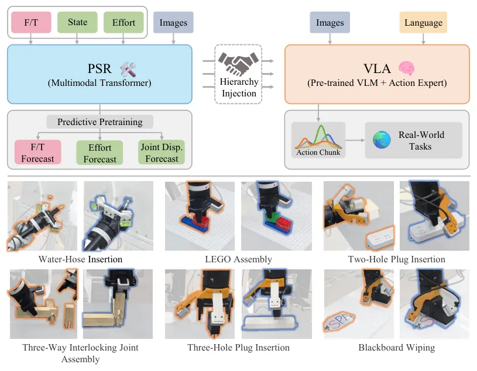
Skel-WAM: A Hand-Skeleton-Conditioned World Action Model for Human-to-Robot Manipulation Transfer
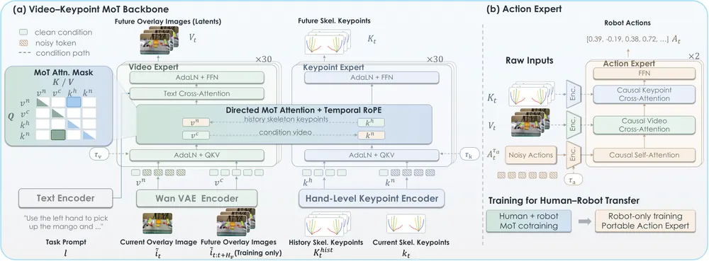
From Pretraining to Proficiency: Real-World Subtask RL for Long-Horizon Manipulation with Minimal Human Intervention
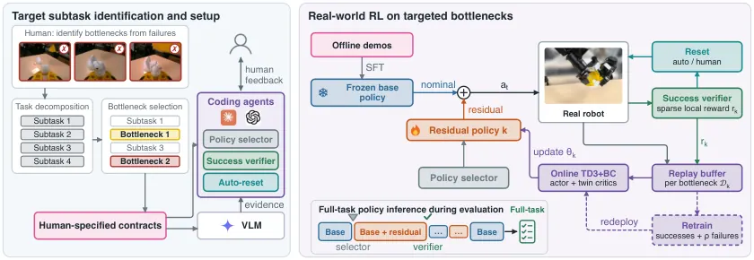
GALA: Geometry-Aware Latent Action Modeling for Vision-Language-Action Model Pretraining across Embodiments
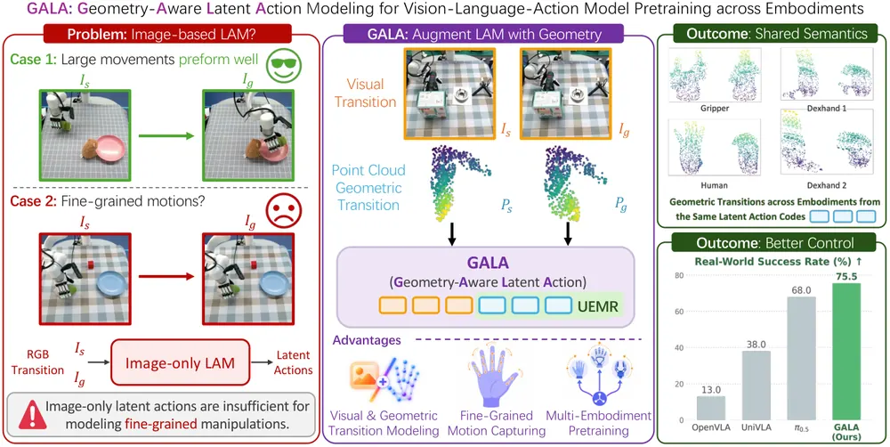
Demonstration Synthesis from a Single Scan via Gaussian Splatting for Visuomotor Policy Learning
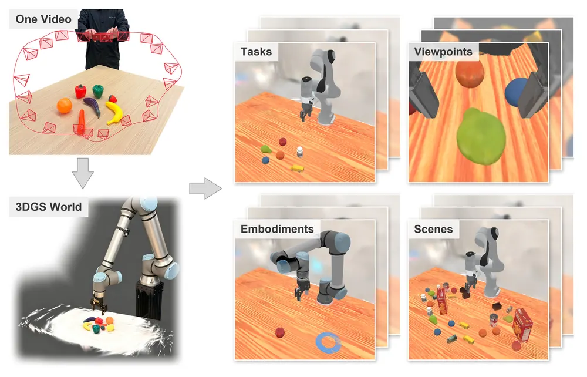
DEXTERA: From a Single Image to Deployable Dexterous Manipulation via Real-to-Sim-to-Real
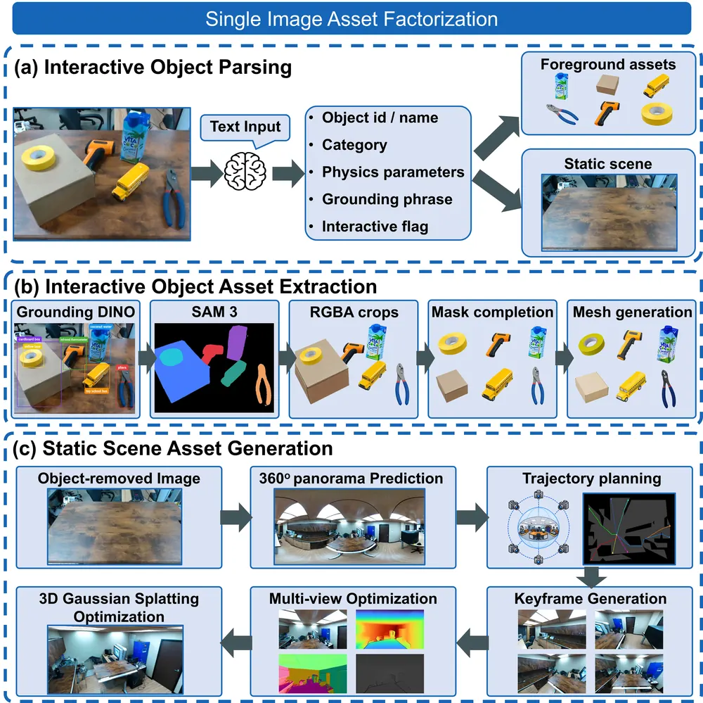
SkelWAM: A Skeleton-Guided World-Action Model for Zero-Shot Cross-Embodiment Manipulation
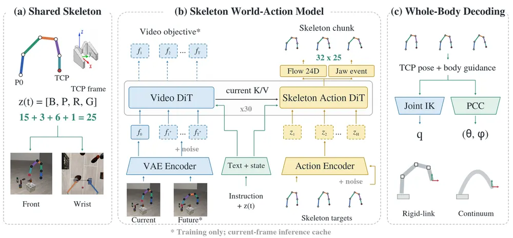
ME-Dex 1.0: Bringing Heterogeneous Tactile Sensing into World Action Modeling
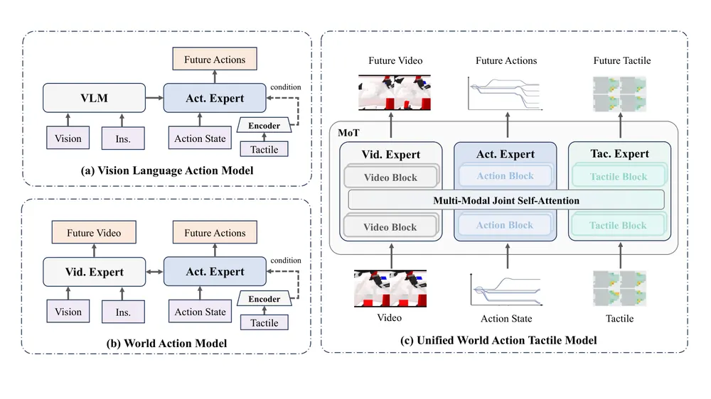
CARF: Contrastive Attraction-Repulsion of Failure-Guided Flow Matching
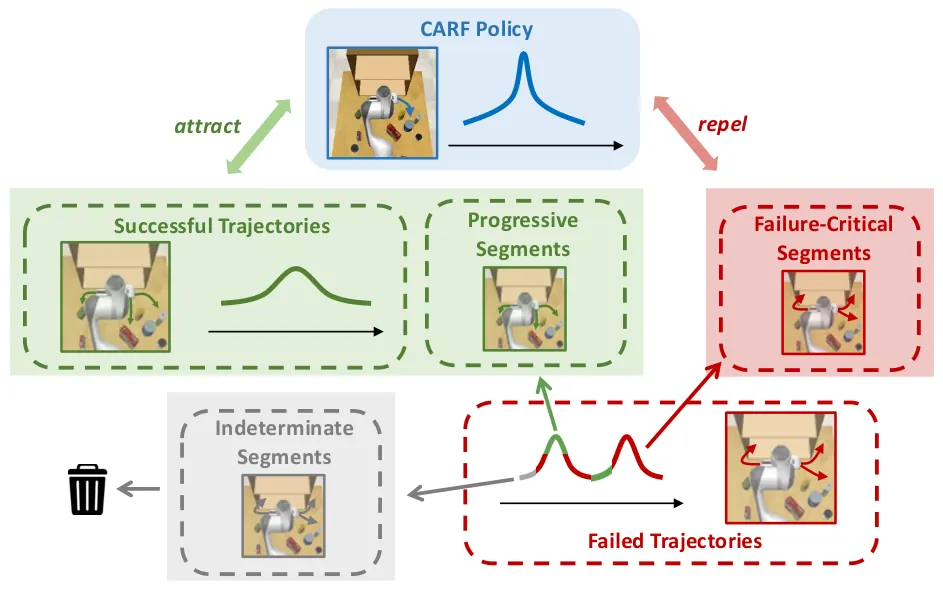
Catch Me If You Can: Real-Time Feedback Denoising for Responsive VLAs
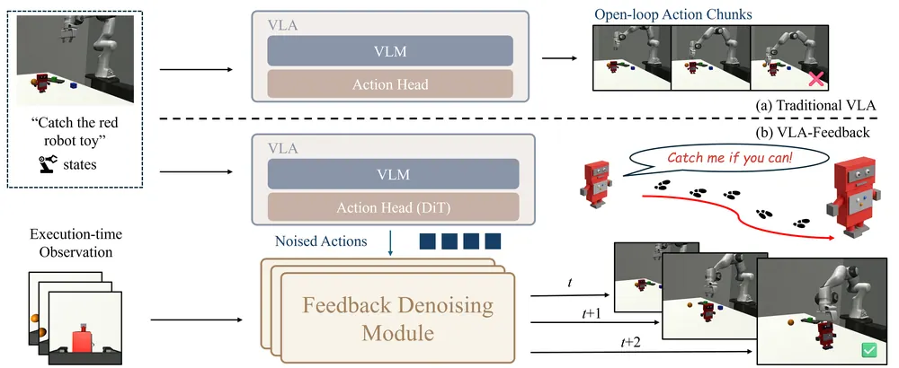
FOCAL-VLA: Subtask-Guided Geometry Distillation and Implicit World Modeling for Vision-Language-Action Models
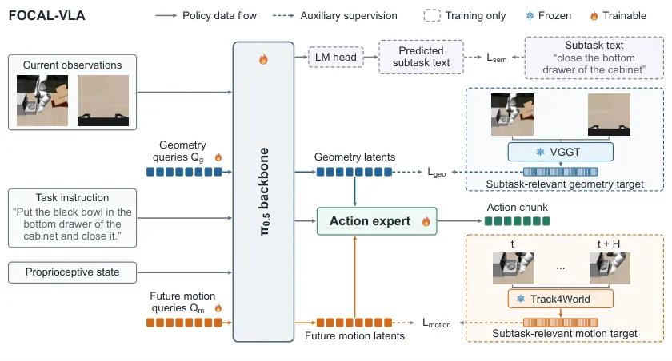
MAAP: Multi-Agent Active Perception for Collaborative Manipulation
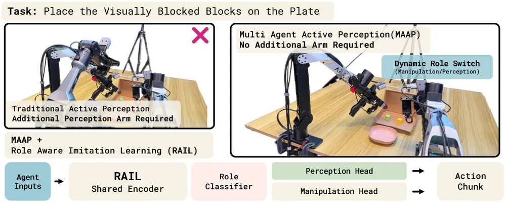
Sandwich-Residuals: Parameter-Efficient Test-time Adaptation of World Models
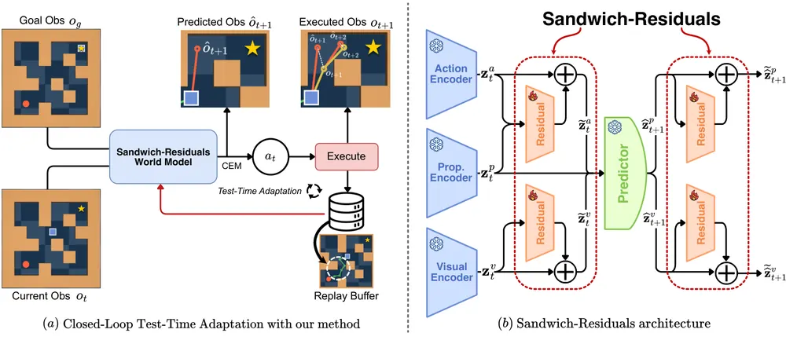
ZeroTouch: Tactile-Supervised Visual Contact Estimation for Contact-Rich Manipulation
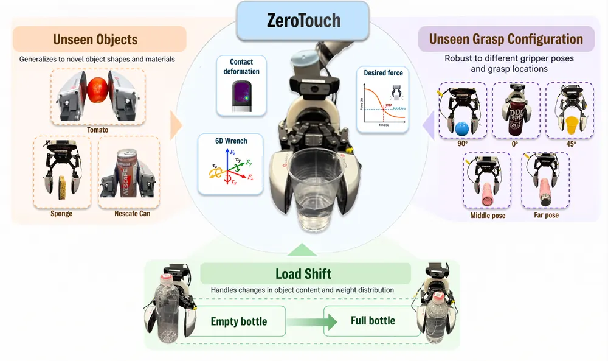
ForeTac-VLA: A Forecasting-Based Tactile-Vision-Language-Action Model for Contact-Rich Robotic Manipulation
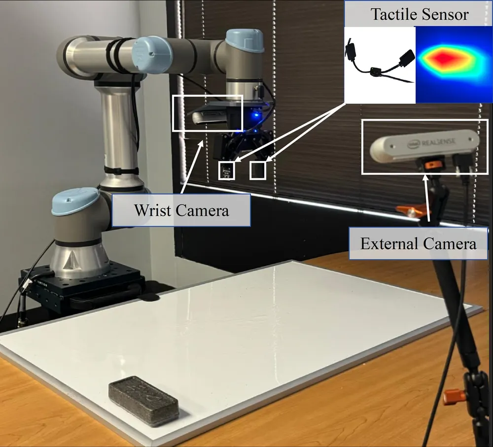
오늘의 핵심 연구 트렌드 종합
- 미래 상태를 예측하는 objective를 도입한 논문이 modality별로 동시다발적으로 나타남 — PSR(F/T·joint effort), SkelWAM(skeleton state), ME-Dex 1.0·ForeTac-VLA(tactile), CARF(progress score) 다섯 편 모두 미래 상태를 예측하는 objective를 독립적으로 씀. 이 예측-실측 오차를 failure 신호로 쓸 수 있다는 아이디어는 각 논문이 직접 검증한 것이 아니라 리뷰가 제안한 확장임.
- 저차원 기하 표현을 canonical interface로 써서 cross-embodiment·human-to-robot 전이를 푸는 계열이 자리잡음 — skeleton/keypoint 기반의 SkelWAM(robot-to-robot)·Skel-WAM(human-to-robot), point cloud 기반의 GALA가 같은 날 나옴. embodiment 차이를 흡수하는 저차원 기하 표현이라는 같은 답을 서로 다른 방식으로 씀.
- VLA backbone은 얼리고 경량 모듈만 온라인/실시간으로 학습시키는 test-time 보정이 늘어남 — Catch Me If You Can(마지막 denoising step만 재추정), Sandwich-Residuals(predictor 입출력단 residual)가 공통적으로 backbone 재학습 없이 소수 파라미터만 건드림.
- task 전체가 아니라 실패가 몰리는 소수 subtask·영역에만 개입을 국소화 — PARTS(bottleneck subtask에만 residual RL), FOCAL-VLA(subtask-relevant 영역에만 geometry distillation)가 같은 문제의식(전체 재학습은 비효율)을 공유함.
- 물리엔진 없이 단일 스캔·이미지에서 조작 시연을 합성하는 data engine이 두 편 등장 — GaussianFactory(비디오 스캔+contact model)는 IL 데이터를, DEXTERA(단일 이미지+VR teleop)는 IL·RL 데이터를 각각 3DGS 기반 real-to-sim 파이프라인으로 확보함.
유망 연구 방향 및 프로젝트 제안
modality 통합 failure attribution — 예측-실측 오차를 모아 실패 원인을 귀속하는 진단 모델 - research question: tactile·F/T·skeleton·geometry 각각의 예측-실측 오차 신호를 하나로 모으면, 어느 modality의 오차가 실제 실패를 유발했는지 구분할 수 있는가. - 접근·novelty: 오늘 나온 다섯 편(PSR, SkelWAM, ME-Dex, ForeTac-VLA, CARF)은 각자 한 modality의 미래 상태를 예측하는 objective만 씀. 이 예측 신호를 실패 판정에 직접 쓰는 논문은 아직 없으므로, 예측-실측 오차를 counterfactual reasoning으로 통합해 "이 오차를 제거했으면 실패가 안 났을까"를 판정하는 attribution head를 새로 설계함. - 왜 지금·경쟁 prior works: 다섯 편이 미래 예측이라는 같은 objective를 독립적으로 냈다는 것 자체가 이 표현이 무르익었다는 신호임. 단순 앙상블로 가면 novelty가 약해지므로 attribution 자체를 formulation으로 잡아야 함. - risk·target venue: 여러 modality를 동시에 갖춘 실로봇 세팅을 새로 구축해야 해서 실험 비용이 큼. CoRL/RSS 타겟.
object-centric 3DGS를 canonical embodiment interface로 쓰는 world-action model - research question: skeleton/point cloud 대신 object-centric 3DGS를 human-to-robot·cross-embodiment의 공유 표현으로 쓰면 occlusion·contact geometry를 더 잘 보존해 전이 성능이 오르는가. - 접근·novelty: SkelWAM·Skel-WAM·GALA는 모두 저차원 keypoint/point cloud로 embodiment를 정렬함. GALA는 recommendation에서 이미 3DGS 확장을 언급함 — object 표면 전체를 canonical latent로 삼는 쪽으로 한 단계 더 감. - 왜 지금·경쟁 prior works: 같은 날 skeleton 계열 3편이 동시에 나온 것은 이 방향이 이미 경쟁이 붙었다는 뜻. 3DGS로 차별화하지 않으면 후발 논문이 됨. - risk·target venue: 3DGS 재구성의 실시간성 확보가 관건. sim 검증만으로는 부족하고 real robot deployment까지 필요함. CoRL.
test-time predictor-freeze + 경량 residual을 world model과 VLA에 동시에 적용하는 통합 test-time optimization 파이프라인 - research question: world model adaptation(Sandwich-Residuals)과 VLA action 보정(Catch Me If You Can)에 쓰인 "backbone 고정 + 경량 모듈만 학습" 패턴을 하나의 파이프라인으로 묶어, world model 오차 신호로 VLA residual을 같이 트리거할 수 있는가. - 접근·novelty: 두 논문은 서로 독립된 모듈(world model residual, action feedback module)을 따로 학습함. 이들을 공유 오차 신호 하나로 연결하면 "언제 재계획할지"와 "어떻게 action을 보정할지"를 한 루프로 처리하는 test-time optimization/inference-time planning formulation이 됨. - 왜 지금·경쟁 prior works: Catch Me If You Can 저자도 predictive world model과의 결합을 future work로 언급함 — 아직 아무도 실제로 붙이지 않음. - risk·target venue: 두 모듈을 동시에 온라인 학습시키면 안정성 확보가 어려움. 우선 sim에서 루프 안정성을 검증한 뒤 real robot으로 확장. CoRL/ICRA.
subtask 단위 실패 진단·개입 국소화를 failure recovery로 확장 - research question: PARTS·FOCAL-VLA가 쓴 "전체 task 대신 bottleneck subtask에만 개입"하는 전략을, 학습이 아니라 실행 중 실패 recovery에 적용하면 재시도 비용을 얼마나 줄일 수 있는가. - 접근·novelty: PARTS는 학습 단계에서 bottleneck을 미리 찾아 RL을 집중시킴. 이를 실행 중 실시간으로 "지금 실패가 어느 subtask에서 났는가"를 판정하는 detector로 뒤집으면, recovery를 처음부터 재시작하지 않고 해당 subtask만 재실행하는 정책이 됨. - 왜 지금·경쟁 prior works: long-horizon manipulation에서 recovery는 대부분 처음부터 재시도하는 방식뿐임. subtask-localized recovery를 다룬 논문은 아직 드묾. - risk·target venue: subtask 경계 정의 자체가 도메인마다 달라 일반화가 어려움. CoRL.
오늘 반드시 읽어야 할 논문
- PSR: Predictive Sensorimotor Representation Learning for Contact-Rich Manipulation — F/T·effort 예측을 pretraining objective로 바꿔 action expert에 주입, 오늘 최고점(74)
- Skel-WAM: A Hand-Skeleton-Conditioned World Action Model for Human-to-Robot Manipulation Transfer (human-to-robot) — 로봇 action label 없이 인간 영상만으로 미학습 variation 성공률을 47pp 올림
- From Pretraining to Proficiency: Real-World Subtask RL for Long-Horizon Manipulation — bottleneck subtask에만 residual RL을 집중시켜 사람 개입 없이 실로봇 RL을 반복
- GALA: Geometry-Aware Latent Action Modeling for VLA Pretraining across Embodiments — point cloud 기반 latent로 사람 손부터 gripper까지 4종 embodiment를 한 표현으로 묶음
- SkelWAM: A Skeleton-Guided World-Action Model for Zero-Shot Cross-Embodiment Manipulation (zero-shot cross-embodiment) — target 로봇 데이터 전혀 없이 zero-shot 43.3%, baseline 대비 36pp 격차
- Demonstration Synthesis from a Single Scan via Gaussian Splatting for Visuomotor Policy Learning — 물리엔진 없이 3DGS 장면에서 시연을 합성해 실로봇 84.2% 성공률
- ME-Dex 1.0: Bringing Heterogeneous Tactile Sensing into World Action Modeling — tactile을 action 조건이 아니라 video처럼 미래 예측 대상으로 재정의
- CARF: Contrastive Attraction-Repulsion of Failure-Guided Flow Matching — 실패 궤적을 버리지 않고 진행성/실패유발 구간으로 나눠 flow matching 학습에 씀
전체 1차 스크리닝 결과 (370편, 점수순) 펼치기
| # | 제목 | 점수 | 🤖 | 분야 | 한 줄 근거 |
|---|---|---|---|---|---|
| 1 | From Pretraining to Proficiency: Real-World Subtask RL for Long-Horizon Manipulation with Minimal Human Intervention | 72 | 9 | Manipulation/RL | 장기과제에서 반복 실패하는 subtask만 골라 residual RL로 보정하고, 소수 사람개입만으로 완전과제 성공률을 32%→61%, 50%→95%로 끌어올림. real-world RL·long-horizon manipulation에 강한 실증을 보임 |
| 2 | GALA: Geometry-Aware Latent Action Modeling for Vision-Language-Action Model Pretraining across Embodiments | 71 | 9 | VLA | 3D end-effector geometry를 image latent action에 결합한 Unified End-effector Motion Representation으로 사람 영상 포함 multi-embodiment 데이터에서 VLA를 pretrain하고 RoboCasa-GR1 68.3%, 실물 75.5% 성공률을 달성함. cross-embodiment latent action에 새 representation을 제시함 |
| 3 | Catch Me If You Can: Real-Time Feedback Denoising for Responsive VLAs | 68 | 9 | VLA | diffusion action chunk의 마지막 denoising step을 실시간 피드백 인터페이스로 남겨 반응성을 높인 VLA 설계임. 동적 시뮬레이션 task에서 성공률을 27.5%에서 85%로, 실로봇에서 51%에서 73%로 끌어올림. |
| 4 | Sandwich-Residuals: Parameter-Efficient Test-time Adaptation of World Models | 68 | 9 | World Model | frozen world model 주변에 소수 파라미터 residual만 온라인 적응시켜 test-time adaptation을 수행하고 파라미터 97-99% 절감하면서 성능 대부분을 유지함. test-time optimization과 world model 우선주제에 정확히 부합하는 새 paradigm임 |
| 5 | PSR: Predictive Sensorimotor Representation Learning for Contact-Rich Manipulation | 68 | 9 | VLA/Manipulation | 미래 상호작용을 예측하는 계층적 sensorimotor representation을 VLA action stream에 결합해 pi0.5 계열 baseline 대비 19-30pp 성공률 향상을 보임. force-aware VLA로 novelty와 실증이 강함 |
| 6 | SkelWAM: A Skeleton-Guided World-Action Model for Zero-Shot Cross-Embodiment Manipulation | 67 | 8 | VLA/World Model | arm centerline과 TCP pose를 공유 25차원 상태로 정의해 embodiment 무관 skeleton 기반 world-action model을 학습하고, LIBERO-Cross10에서 최고 baseline 대비 36.2pp 앞섬. cross-embodiment 문제를 명시적 기하 표현으로 재정의함 |
| 7 | ME-Dex 1.0: Bringing Heterogeneous Tactile Sensing into World Action Modeling | 66 | 10 | VLA | video, tactile, action을 하나의 world action model에서 flow matching으로 동시에 예측하는 Mixture-of-Transformers 구조임. tactile을 conditioning이 아니라 미래 관측으로 직접 모델링한다는 formulation 전환이 핵심이고, heterogeneous tactile embodiment를 공유 잠재공간으로 정렬하는 것까지 포함함. RoboTwin·DexJoCo·ManiFeel 시뮬레이션과 실로봇 조작 실험으로 뒷받침됨. |
| 8 | MAAP: Multi-Agent Active Perception for Collaborative Manipulation | 65 | 8 | Manipulation/Active Perception | 다중 팔의 wrist camera를 능동 시점으로 재활용하고 role-aware imitation learning을 결합해 고정카메라 대비 성공률을 56.5%→79.2%로 끌어올림. collaborative manipulation을 active perception 메커니즘으로 재정의하는 새 problem formulation임 |
| 9 | ForeTac-VLA: A Forecasting-Based Tactile-Vision-Language-Action Model for Contact-Rich Robotic Manipulation | 64 | 9 | VLA | 미래 tactile 상태를 예측해 VLA의 action generation에 반영하는 forecasting 기반 tactile-VLA 융합임. 4개 contact-rich task에서 fine-tuned VLA 대비 36.25%p 높은 성공률을 실제 로봇에서 보임. |
| 10 | Demonstration Synthesis from a Single Scan via Gaussian Splatting for Visuomotor Policy Learning | 64 | 9 | Manipulation | 단일 비디오 스캔만으로 3DGS 장면을 재구성해 물리엔진 없이 시연을 대량 합성하는 data engine임. 실제 UR10e에서 diffusion policy를 이 데이터만으로 학습시켜 84.2% 성공률을 얻음. |
| 11 | CARF: Contrastive Attraction-Repulsion of Failure-Guided Flow Matching | 64 | 8 | Manipulation/IL | 성공 궤적에서 학습한 progress scorer로 실패 궤적의 진행 구간과 실패유발 구간을 구분해 flow matching에서 각각 attract·repel시킴. 실패 데이터를 능동적 회피 신호로 쓰는 비대칭적 supervision이 새로움 |
| 12 | DEXTERA: From a Single Image to Deployable Dexterous Manipulation via Real-to-Sim-to-Real | 63 | 9 | Manipulation | 단일 RGB 이미지에서 3DGS 기반 digital twin을 자동 구성해 dexterous manipulation 정책을 학습시키는 real-to-sim-to-real 파이프라인임. sim-real co-training으로 성공률을 29.2%에서 61.9%로 크게 높임. |
| 13 | FOCAL-VLA: Subtask-Guided Geometry Distillation and Implicit World Modeling for Vision-Language-Action Models | 63 | 9 | VLA | 현재 subtask와 관련된 영역만 골라 VGGT geometry를 distill하고 미래 상호작용을 implicit world model로 학습하는 VLA임. 불필요한 장면 정보로 인한 방해를 줄이는 설계로 sim·real 모두에서 baseline을 앞섬. |
| 14 | Skel-WAM: A Hand-Skeleton-Conditioned World Action Model for Human-to-Robot Manipulation Transfer | 63 | 9 | VLA | 손-골격을 human-robot 공통 인터페이스로 써서 인간 영상으로 world action model을 학습시킴. human-robot co-training으로 학습 데이터에 없는 task variation의 성공률을 38.89%에서 86.11%로 두 배 이상 올림. |
| 15 | ZeroTouch: Tactile-Supervised Visual Contact Estimation for Contact-Rich Manipulation | 63 | 8 | Manipulation | wrist RGB만으로 tactile supervision을 대체해 접촉력을 추정하고 OpenVLA·SmolVLA 대비 실물 성공률을 크게 앞섬. privileged tactile supervision 아이디어가 tactile perception·manipulation에 실질적으로 기여함 |
| 16 | ForceTwin: Physics-informed Digital Twins for Robotic Manipulation from Instrumented Human Interaction | 63 | 8 | Manipulation/World Model | 사람이 힘센싱 그리퍼로 물체를 탐침해 관성·마찰·상태의존 메커니즘을 식별하는 physics-informed digital twin을 만들고 Spot·Franka에서 VLM prior·kinematics-only 대비 큰 성공률 향상을 보임 |
| 17 | MT-WAM: Reorienting the One-Pass Predictive Representation Toward Action Generation | 62 | 10 | VLA | Fast-WAM의 one-pass predictive representation이 제어에 필요한 미래 dynamics·시각 구조를 명시적으로 우선시하지 않는다는 문제를 지적하고 2D point trajectory와 visual feature를 추가 supervision으로 붙인 world action model임. LIBERO-Plus에서 Fast-WAM 대비 23.8%p 개선, 실로봇 4개 태스크 평균 성공률이 67.0%에서 77.8%로 오름. inference 시 future-video 예측을 건너뛰어 효율까지 챙긴 점이 실용적임. |
| 18 | A Scene Language Model for Open-Vocabulary Scene Mapping | 62 | 9 | Embodied AI | 3D scene을 임베딩이 아니라 구조화된 텍스트 리스트 하나로만 유지하는 scene-language model임. 기존 인식·기하 모듈 조합 시스템 대비 6~12배 압축된 메모리로 경쟁력 있는 성능을 내고 quadruped 로봇에서 온라인 구동도 검증함. scene representation을 언어모델의 출력 그 자체로 정의한 formulation이 새로움. |
| 19 | Fewer Steps, Better Actions: Rethinking Flow-Matching Inference for VLA Policies | 62 | 9 | VLA | flow-matching VLA의 integration step 일부를 학습된 endpoint correction으로 대체해 추론 비용을 줄임. RoboTwin에서 2 step만으로도 baseline 5 step 대비 높은 성공률을 유지해 test-time 효율화에 새 원리를 제시함. |
| 20 | RAYA: Learning Where and When to Intervene for Robot Recovery | 62 | 9 | Robotics | recoverability margin을 controller 안에 넣어 사고 전에 행동을 조정하고 task 우선순위까지 동적으로 바꾸는 RAYA를 제안함. 35g Crazyflie 실기 바람 실험에서 baseline이 전부 실패한 상황을 10/10 성공시켜 failure recovery 우선주제에 강하게 부합함. |
| 21 | WM-VS: Progress-Aligned World Models for Closed-Loop Visual Servoing | 62 | 8 | World Model | action이 task error를 줄이는지 예측하지 못하는 prediction-control mismatch를 지적하고 progress-aligned world model로 해결함. 실제 7-DoF eye-to-hand 시스템에서 30/30 성공으로 검증함. |
| 22 | Robotic Multiphase Interaction: Manipulating Coupled Liquid and Solid Dynamics with a World Model | 62 | 8 | World Model | 액체가 다공성 고체와 상호작용하며 물성이 함께 변하는 multiphase interaction이라는 새 manipulation 문제를 정의함. world model로 젖은 스펀지 조작을 예측·계획해 물 잔류 예측 오차를 60% 이상 줄임. |
| 23 | CommitFlow: Semantic Commitment Verification and Local Correction for Long-Horizon Robot Manipulation VLA Execution | 62 | 8 | VLA/Manipulation | VLA 실행 중 stage별 물리적 조건 충족 여부를 모니터링하고 국소 보정을 가하는 closed-loop 프레임워크로 RoboTwin 2.0에서 pi0.5 대비 22.7pp 성공률 향상을 보임. failure detection과 VLA 결합에 실질적 기여가 있음 |
| 24 | When Should a Failing Robot Ask? Initiating Corrective Human-Robot Dialogue from Audited Sensor Evidence | 62 | 8 | Embodied AI/Failure Detection | 실패 원인 진단에 force 데이터가 이미지보다 훨씬 유효함을 데이터유출 없는 벤치마크로 보이고, VLM들이 프롬프트 순서에 휘둘려 비용과 무관하게 질문함을 실증함. failure diagnosis와 human-robot dialogue 개시 문제를 엄밀하게 분석함 |
| 25 | SeeQ: Training Generalist Value Functions for Long-Horizon Robotic Manipulation | 62 | 8 | Manipulation/RL | 현재 활성 subtask에 한정한 Q-function을 VLM 백본으로 자기회귀 예측해 credit assignment 지평을 단축시키고, 두 bimanual 플랫폼에서 best-of-N steering 성능을 크게 개선함. long-horizon manipulation의 value function 학습에 실용적 기여가 있음 |
| 26 | VLA-Scope: Shift-Aware Failure Prediction for Vision-Language-Action Models | 60 | 9 | VLA | OOD 탐지만으로는 부족하다는 문제의식으로 실행 이력까지 결합해 VLA 실패를 예측하는 2단계 프레임워크임. failure detection 우선주제와 정확히 맞물리고 baseline보다 높은 ROC-AUC를 보임. |
| 27 | ProTracer: Proprioception-Guided Failure Diagnosis in Robot Manipulation | 60 | 9 | Manipulation | proprioception 신호로 시간 경계를 잡고 이를 자연어로 바꿔 VLM에게 넘기는 학습 없는 실패 진단 프레임워크임. failure onset localization이라는 새 task와 벤치마크까지 제시해 failure diagnosis 우선주제에 부합함. |
| 28 | AtomEgo: Exploring Ego-Robot Integration for Embodied Foundation Model Pretraining | 60 | 9 | VLA | 2659시간 규모 ego-robot 코퍼스로 VLA·world-action model에 인간 영상을 활용하는 세 전략을 체계적으로 비교함. alignment 품질이 성능을 좌우한다는 실용적 원리를 제시함. |
| 29 | Benchmarking World Models for Continual Learning on Compositional Tasks | 60 | 8 | World Model | world model의 continual learning에서 지식 재사용만 분리 측정하는 compositional robot manipulation 벤치마크를 제안함. world model·continual learning이라는 우선주제와 직결되나 방법 제안보다 벤치마킹 위주임. |
| 30 | Visual Navigation Transformer with Pose Attention | 60 | 8 | Navigation | 관측을 시간 순서 대신 camera pose 차이로 attention하는 transformer navigation 정책을 제안함. HM3D에서 SR 93.3%로 temporal encoding baseline을 능가하고 경험의 pose 기반 재사용까지 가능함. |
| 31 | CounterPlay: Counterfactual Post-Training for Self-Play Driving Policies | 60 | 7 | RL | self-play 주행정책의 실패 지점에서 되돌아가 다른 운전 스타일로 재시도하는 counterfactual post-training임. anchor 학습량의 1%만으로 timeout 실패를 상당수 해결해 counterfactual reasoning 우선주제에 부합함. |
| 32 | SynthDemo-RL: Breaking the Zero-Reward Barrier in VLA Adaptation with LLM-Guided Synthetic Demonstrations | 59 | 9 | VLA | 시뮬레이터 특권 정보로 성공 궤적을 합성해 VLA를 SFT로 부트스트랩한 뒤 PPO로 다듬는 SynthDemo-RL임. LIBERO-PRO에서 성공률 0%였던 27개 task를 전부 구제해 sparse reward 문제를 정면돌파함. |
| 33 | Safe Real-Time Policy Steering via Noise-Space Trajectory Optimization for One-Step Generative Policies | 58 | 8 | VLA | one-step generative policy의 noise space에서 population 기반 궤적최적화로 제약을 만족시키는 inference-time steering 기법임. gradient guidance보다 낮은 runtime으로 성공률과 제약만족을 함께 개선함. |
| 34 | FAN: Foresight Action Normalization for Continual Adaptation of Vision-Language-Action Models | 58 | 8 | VLA | continual VLA 적응에서 그동안 간과된 action normalization 문제를 지적하고 통계를 한 번만 추정해 고정하는 FAN을 제안함. 여러 실제 task stream에서 기존 normalization 전략보다 안정적으로 성능이 높음. |
| 35 | PIVOT: Physically Informed Vision-Language Off-Road Traversability for Field Robot Navigation | 58 | 7 | Navigation | geometry 기반 계획을 기본으로 두고 VLM의 traversability 판단을 실제 진동·슬립 측정치와의 상관도로 가중해 결합한 off-road navigation 시스템임. 6.4km 실주행에서 자율성을 59.6%에서 97%로 크게 높임. |
| 36 | Learning Scene-Aware Humanoid Locomotion through 3D Clutter from Immersive Human Demonstrations | 58 | 7 | Embodied AI | VR로 수집한 인간 시연을 humanoid에 retarget해 3D clutter를 통과하는 scene-aware locomotion을 학습시킴. 실제 Unitree G1에서 검증했으나 충돌없는 통과율이 70.2%로 한계가 있음. |
| 37 | KnowDemo: Knowledge-Guided Robot Demonstration Generation from Human Videos | 57 | 8 | Manipulation | 인간 비디오에서 VLM으로 task 요구조건과 시연별 변형 가능 범위를 분리 추출해 다양한 robot demonstration을 생성함. pi_0.5를 이 시뮬레이션 데이터로 파인튜닝해 sim-to-real까지 검증함. |
| 38 | Adaptive World Memory 3D Foundation Model for Scalable 3D Mapping, Localization, and Rendering | 56 | 8 | World Model | 게이트 기반 recurrent memory와 test-time temporal-spatial regulation으로 장기 시퀀스에서도 로컬 정확도와 전역 일관성을 함께 유지하는 3D foundation model임. pose 추정, dense reconstruction, Gaussian rendering을 하나의 memory-centric 모델로 통합하고 여러 로봇 플랫폼 데이터로 검증함. persistent robot world modeling에 memory를 기초로 삼는 방향이 관심사와 직접 맞닿음. |
| 39 | AirSplan: Risk-Aware Motion Planning for Quadrotors in Cluttered 3D Gaussian Splats | 56 | 7 | 3D Vision | 3DGS 장면 표현에 differential flatness 기반 reachability 제약을 결합한 quadrotor risk-aware 경로계획임. 어려운 테스트에서 성공률을 51.2%에서 81.2%로 크게 높임. |
| 40 | FootQuery: Future-Touchdown-Guided Retrieval from Depth History for Perceptive Humanoid Locomotion | 56 | 7 | Embodied AI | 다음 착지점 예측을 이용해 과거 depth 기록 중 필요한 지형 정보만 검색하는 humanoid perceptive locomotion임. 실제 Unitree G1에서 계단·틈이 섞인 경로를 하나의 정책으로 연속 통과함. |
| 41 | A Fully Differentiable Neuro-Soft-Symbolic Framework for Perceptual Task Planning | 56 | 7 | Embodied AI | 불확실한 시각 인식과 논리적 계획을 하나의 미분가능한 그래프로 연결한 neuro-soft-symbolic 프레임워크임. Blocksworld에서 인식 불확실성 하 성공률을 59%에서 83%로 올리고 task-and-motion 시뮬레이션으로 로봇 실행 호환성까지 검증해 perception-planning 결합이라는 새로운 formulation을 제시함. |
| 42 | PRIME: Perception Feedback with Situational Memory Embeddings in VLA Models | 55 | 8 | VLA | VLA의 perception 모듈이 하위 reasoning·planning 목표를 모른 채 feedforward로만 동작하는 문제를 짚고 과거 perception·reasoning·navigation·behavior의 latent를 Situational Memory로 cross-attention시켜 perceptual query에 피드백을 주는 구조임. Bench2Drive에서 Driving Score 82.47로 SOTA를 갱신하면서 파라미터 증가는 0.41%에 불과함. perception이 downstream 의도를 인지하게 만드는 방향이 VLA memory·feedback 연구와 직접 맞닿음. |
| 43 | Towards Fine-Grained Object Manipulation: SAM3-Guided Visuomotor Policy with Persistent Memory Learning and Focused Visual Conditioning | 55 | 8 | Manipulation | SAM3를 얼린 채로 재사용 가능한 object memory token만 학습해 유사 물체 사이에서 표적을 구분하는 visuomotor 프레임워크임. robot memory 우선주제와 연결되고 실제 3개 task에서 검증함. |
| 44 | MetaPusher: Meta Learning and Planning for Nonprehensile Manipulation of Unseen Objects with Rapid Online Adaption | 55 | 7 | Manipulation | meta-learned dynamics 모델과 online 재계획을 결합해 미지 물체의 nonprehensile manipulation에 빠르게 적응함. sim-to-real에서 baseline 대비 성공률을 최대 20%p 개선함. |
| 45 | Learning Distance-Conditioned Object Transport for Humanoid Loco-Manipulation from a Single Motion Clip | 55 | 7 | Embodied AI | 시연 궤적의 중간 지점을 종료 상태로 재구성해 거리 조건부 humanoid 운반 정책을 만드는 DCRR을 제안함. termination-vs-passage gap이라는 문제를 명확히 짚고 실제 하드웨어로 검증함. |
| 46 | Potential-Field Action Representation for Reinforcement Learning in Contact-Rich Manipulation | 55 | 7 | RL | artificial potential field 파라미터를 정책 출력으로 삼아 RL의 action representation 부담을 줄이는 PA-RL을 제안함. peg-in-hole에서 baseline보다 높은 성공률과 낮은 힘 변동을 real robot에서 검증함. |
| 47 | GEM-MPC: Balancing Exploration and Exploitation through Expert-Guided Planning | 55 | 6 | RL | MPPI planning과 학습 policy 간 정렬 문제를 gated prior distillation으로 완화한 방법임. continuous control에서 planning 기반 baseline을 낮은 연산 비용으로 능가해 manipulation·TAMP에 활용 가능성 있으나 sim 벤치마크에 한정됨. |
| 48 | Shake to Learn: Dynamic Interrogation of Hidden Object Physics for Robotic Manipulation with Physical Reservoir Computing | 55 | 6 | Manipulation | 흔들었을 때 생기는 진동 응답으로 숨겨진 물체 무게중심을 추정하는 soft robot reservoir computing 방식임. 시각으로 알 수 없는 물성을 상호작용으로 읽어내는 새로운 감지 modality를 제안함. |
| 49 | LEMCA: LLM-Guided Synthesis of Efficient Mode-Switching Control Architectures | 55 | 6 | RL | LLM이 진화적 루프로 mode-switching 제어 구조를 프로그램으로 편집해 자원 배분을 자동 설계함. monolithic 설계의 자원낭비를 줄이는 새로운 paradigm을 제시함. |
| 50 | Intervention Granularity Matters: Coherent Treatment Bundles in Counterfactual Simulation with Clinical World Models | 55 | 5 | World Model | 임상 개입을 단일 파라미터가 아닌 전체 bundle 단위로 편집해야 world model의 counterfactual 예측이 유효함을 실증함. intervention granularity 문제는 robot action bundle 설계에도 시사점이 있으나 도메인은 임상에 한정됨. |
| 51 | Same World, Different Knowledge: When Isolated Audits Misjudge World-Model Repairs | 54 | 7 | World Model | 동일한 입력 결함이라도 배포 모듈이 정보를 공유하는지에 따라 world model repair의 우열이 뒤집힘을 quadrotor MPC로 보인 진단 프레임워크임. world model failure 분석에 실용적 통찰을 제공함. |
| 52 | AVT-Fabric: Active Visuo-Tactile Perception via Adaptive Evidence Selection for Efficient Robotic Fabric Comparison | 54 | 7 | Manipulation | RGB를 우선 보고 애매할 때만 GelSight 촉각을 추가 요청하는 active visuo-tactile 비교 방법임. 실제 로봇 배치까지 검증했고 90B 모델보다 큰 7B 모델이 더 적은 단계로 더 높은 정확도를 냄. |
| 53 | SABER: Learning Attention-based Semantic Affordance for Legged Locomotion | 54 | 7 | Embodied AI | 지형 기하와 semantic contact 허용도를 함께 인코딩해 legged locomotion의 attention을 재조정하는 SABER를 제안함. semantic bias를 제거하면 금지구역 접촉이 55% 늘어남을 ablation으로 보이고 Unitree B2 sim-to-real까지 검증함. |
| 54 | NaViRrator: Robot Navigation from Human-Readable Maps through a Learned Visual Route | 53 | 7 | Navigation | 사람이 읽는 지도 위 시작-목표점을 flow matching으로 경로 scaffold화하고 VLM이 언어 지시로 옮겨 기존 VLN 정책에 넘기는 모듈형 인터페이스임. 실제 환경에서 baseline 대비 SPL을 개선함. |
| 55 | SafeStage: Evaluating Safety Before, During, and After Vision-Language-Conditioned Robot Manipulation | 52 | 8 | VLA | vision-language 조건 manipulation의 실행 전·중·후 안전성을 97개 시나리오로 나눠 평가하는 벤치마크임. task 성공과 안전 위반이 공존함을 드러내는 진단 도구로서 유용함. |
| 56 | 2D GauSS-MI: Efficient Active Scene Reconstruction with Balanced Visual and Geometric Quality | 52 | 7 | 3D Vision | 2D Gaussian Splatting의 명시적 surface orientation을 이용해 mutual information 기반 active view selection을 정식화한 논문임. visual·geometric 품질을 함께 고려하면서 연산량을 크게 줄여 실시간 active reconstruction에 적합함. active perception/NBV라는 우선 주제를 직접 다룸. |
| 57 | DPed-VLN: A Benchmark for Socially Compliant Vision-and-Language Navigation in Dynamic Pedestrian Environments | 52 | 7 | Navigation | 동적 보행자 환경에서 사회적 안전까지 함께 평가하는 VLN 벤치마크임. NaVILA·StreamVLN 같은 VLM 기반 navigation 정책의 LoRA 적응 효과를 비교함. |
| 58 | Compact but Moving: Intervention-Relevant Geometry in Recurrent World Models | 52 | 7 | World Model | recurrent world model에서 counterfactual velocity intervention이 rollout 중 어떻게 이동하는지 기하학적으로 분석한 해석가능성 연구임. counterfactual reasoning·world model 우선주제와 맞닿으나 성능개선보다 분석 위주임 |
| 59 | Dynamics-Induced Commitment in Learning-Based Robotic Penalty Kicks | 52 | 6 | RL | penalty kick 상황에서 humanoid-quadruped self-play 정책의 신체 제약이 만드는 전략적 commitment를 게임이론으로 분석함. embodied RL과 전략학습을 잇는 흥미로운 formulation이나 응용 범위는 좁음. |
| 60 | Noctif3R: Feed-Forward Monocular Real-Time SLAM for Photon-Limited Scenes on Embedded Hardware | 52 | 6 | 3D Vision | 저조도 환경에서 실시간 동작하는 monocular feed-forward SLAM을 Jetson 임베디드에서 구현함. 기존 SOTA가 전부 실패하는 극저조도 구간에서 추적을 유지하는 강건성을 보임. |
| 61 | Beyond Kinematics: Benchmarking Simulation Fidelity for Muscle-Driven Imitation Learning | 50 | 7 | Manipulation | SCONE/HyFyDy와 MuJoCo/MyoSim 두 motion-imitation RL 파이프라인을 EMG 정합도로 비교해 kinematics만으로는 신경근 충실도를 보장 못함을 보임. robotic assistive-device 설계에 바로 쓰일 벤치마크 연구이나 새 학습 방법 제안은 없음. |
| 62 | SAGE: Safety-Aligned Gradient Enforcement for Human--Robot Collaboration | 50 | 6 | RL | decision-tree 정책과 CBF를 결합한 multi-agent human-robot collaboration 안전 프레임워크임. 두 humanoid와 실제 사람이 함께하는 물리 실험으로 검증했으나 안전-성공률 trade-off는 여전히 남음. |
| 63 | Stochastic Neural Signed Swept Volume for Real-time Chance-Constrained Trajectory Optimization | 50 | 6 | Manipulation | swept volume을 확률적 field로 학습해 인식 불확실성까지 반영한 chance-constrained 궤적최적화임. 고차원 manipulation 문제에서 실제 하드웨어로 검증함. |
| 64 | Beyond Gaussian Worlds: Latent Geometry Matters for JEPAs | 50 | 4 | World Model | JEPA의 representation collapse 방지 이론을 구형 등 non-Euclidean latent geometry로 확장해 Gaussian 외에도 linear recovery가 가능함을 증명함. world model 핵심 아키텍처인 JEPA의 identifiability 이론이라 관련성 있으나 실로봇 적용은 없음. |
| 65 | Scaling Discovery through Test-Time Communication | 50 | 2 | NLP | test-time에 multi-agent가 공유 디렉토리로 소통하면 4배 규모의 독립 agent 성능을 따라잡음을 ARC-AGI-3 등에서 보임. test-time communication이라는 paradigm 자체는 새롭지만 robotics 적용은 다루지 않음. |
| 66 | Stability-aware Residual Reinforcement Learning Framework for Robotic Manipulator Disturbance Compensation | 48 | 6 | RL | analytical observer와 RL 잔차보정을 결합하고 input-to-state stability로 안정성을 보장한 disturbance compensation임. 실제 6-DOF manipulator에서 tracking error를 27.8% 줄임. |
| 67 | Adaptive Rollout Truncation Based on Epistemic Uncertainty for Efficient Offline World Model Training | 48 | 6 | World Model | world model 학습 중 epistemic uncertainty가 임계값을 넘으면 rollout을 조기 종료하는 adaptive curriculum임. 계산량을 72% 줄이면서 성능은 유지함. |
| 68 | CRISP: Contact-Rich Robotic Simulation Platform with Extensive Geometries and Contact Solvers | 48 | 6 | Manipulation/Simulation | 정밀 접촉 시뮬레이션을 위한 새 physics engine으로 collision detection과 augmented Lagrangian solver를 통합함. 알고리즘 novelty보다 범용 도구 기여이나 contact-rich manipulation 연구에 유용함 |
| 69 | LIMBO: Learning and Internalizing Model-Free Barrier Objectives for Agile and Safe Whole-Body Control | 48 | 6 | RL/Safety | frozen base controller 위에 model-free Q-CBF를 합성해 29자유도 휴머노이드의 dodgeball 회피 등 agile whole-body task에서 온라인 safety filter 없이 하드웨어 전이를 달성함. risk-guided boundary sampling이 안전 학습에 새 기여를 함 |
| 70 | ASGARD: Action-Space Guard for UAV Resilience via Reinforcement Learning | 48 | 5 | RL | UAV RL controller에 대한 action-space attack에 teacher-student로 대응하는 resilience 기법임. UAV 제어라는 실체 있는 로봇 문제를 다루나 novelty는 기존 방어 구조의 조합에 가까움. |
| 71 | REFINEPPO: Learning Continuous Control Policies by Iterative Action Refinement | 48 | 5 | RL | action을 한 번에 예측하지 않고 반복적으로 residual correction하는 PPO 확장임. continuous control 14개 task에서 수렴 속도 개선을 보였으나 sim 벤치마크 수준이고 개념적 새로움은 제한적임. |
| 72 | SPARROW: Survival-POMCP for Adaptive Robot Routing, Observation, and Waiting | 48 | 5 | Navigation | 임시 장애물 앞에서 대기·우회·관측을 POMCP belief planning으로 결정하는 survival 기반 경로계획임. 실제 로봇에서 baseline 대비 time-to-goal을 20.5% 줄였으나 응용 범위는 좁음. |
| 73 | LOInK: Learned Optimal Inverse Kinematics via Structured Neural Surrogate Models | 48 | 5 | Robotics | cost-minimizing 해를 latent space 원점에 두는 구조화된 invertible mapping으로 IK를 학습함. 사족보행 climbing 문제에서 기존 제약 최적화 대비 최대 100배 빠름. |
| 74 | Abstention and Noise Filtering: Two Missing Primitives of Softmax Attention | 48 | 1 | LG | softmax attention에 abstention·noise filtering 두 primitive를 추가한 메커니즘 분석 논문임. 언어모델 pretraining 관점에선 흥미롭지만 robotics와는 무관함. |
| 75 | Outcome-Conditioned End-Effector Geometry Across Vision-Language-Action Policies | 47 | 7 | VLA | 동일 task를 푸는 서로 다른 VLA 정책들의 end-effector 궤적 기하를 비교해 성공 여부와 궤적 유사도의 관계를 분석함. 새 방법 제안보다는 VLA 평가에 대한 분석적 통찰 위주임. |
| 76 | Risk-Aware Occupancy for Safety-Oriented End-to-End Autonomous Driving | 47 | 5 | Navigation | sparse 객체 표현 대신 global occupancy·지도 제약·미래 동적 occupancy를 하나의 BEV 표현으로 묶은 risk-aware occupancy를 제안해 nuScenes open-loop 충돌률을 52.9%(UniAD)·35.0%(ST-P3) 줄임. E2E 주행 계획용 dense risk representation이라는 점에서 embodied spatial reasoning과 맞닿음. |
| 77 | Cube-Splat: High-Fidelity 360° Gaussian Splatting SLAM via Cubemap Factorization and Adjoint-Consistent Optimization | 46 | 6 | 3D Vision | 360도 파노라마 프레임을 큐브맵으로 분해해 3DGS SLAM을 시도한 첫 논문임. adjoint mapping으로 face 간 pose 일관성을 강제하는 정식화가 새롭고 dense visual SLAM 계열이라 로봇 매핑에 바로 활용 가능함. |
| 78 | Info3R: Information-Adaptive Test-Time Training for 3D Reconstruction | 46 | 6 | 3D Vision | 온라인 3D reconstruction에서 프레임의 정보량과 내부 state의 포화도를 반영해 state 갱신 강도를 조절하고 누적 갱신량과 예측 신뢰도로 state를 리셋하는 test-time training 기법임. 긴 시퀀스에서 pose drift를 크게 줄이며(KITTI ATE 1.68배 개선) streaming reconstruction에 test-time training을 접목한 정식화가 새롭고 로봇 온라인 인식 백본으로 바로 활용 가능함. |
| 79 | NeuRIO: A Streaming Neural Estimator for Zero-Shot Sim-to-Real Multi-Robot Relative Inertial Odometry | 46 | 6 | Robotics | 다중로봇 상대 관성 odometry를 GNN+attention으로 풀어 zero-shot sim-to-real과 400대 규모 확장성을 보임. robot learning 우선주제와는 거리 있는 state estimation infra 기여임 |
| 80 | World Modeling in Transformers | 46 | 5 | World Model | 행동 실패만으로 world model 부재를 단정하면 안 된다는 걸 mechanistic interpretability로 보인 연구임. transformer가 위치·목표를 내부적으로 추적하면서도 중첩된 intersection feature 간 간섭 때문에 실패한다는 걸 causal intervention으로 규명하고 affordance packing으로 완화함. world model을 직접 다루는 핵심 우선 주제지만 검증 환경이 toy 격자 navigation(TaxiGPT)에 그쳐 로봇 world model로의 전이는 확인되지 않음. |
| 81 | MicroHookACT: Monocular Microscopic Vision Guided Visuomotor Policy for Flexible Microelectrode Hooking | 45 | 6 | Manipulation | 현미경 시야에서 미세전극 바늘고리를 거는 visuomotor 정책임. imitation learning 기반이나 매우 좁은 의료 응용 도메인에 국한됨. |
| 82 | Diverse and Adaptable Arm Coordination for Octopus-Crawling via Diffusion-Based Uncertainty-Aware Optimization | 45 | 5 | RL | diffusion 기반 uncertainty-aware 최적화로 octopus 로봇의 다양한 기어가기 협응 모드를 발견함. simulation-only라 실로봇 검증은 없음. |
| 83 | Stabilizing Trajectory Outputs in End-to-End Autonomous Driving via SC-IMM Based Teacher Signals | 45 | 5 | Autonomous Driving | IMM 기반 teacher 신호로 end-to-end 자율주행 waypoint의 시간적 불안정성을 보조 지도학습으로 줄임. CARLA 폐루프에서 충돌을 62.3% 줄였으나 도로주행 IL 영역이라 robot manipulation과는 거리 있음. |
| 84 | Driving on Registers, Reasoning on Risk: Risk-Aware Occupancy for Register-Based End-to-End Autonomous Driving | 45 | 5 | Navigation | register 기반 E2E 주행에서 오라클 최선 후보가 평균 33.9위로 밀리는 문제를 risk-aware occupancy로 보완해 NAVSIM PDMS를 0.937에서 0.951로 올림. sensor 기반 예측기까지 검증했지만 같은 계열 선행 논문(2609.21470)의 후속 버전 성격임. |
| 85 | Efficient Bayes-Adaptive Reinforcement Learning with Temporal Logic Specifications | 45 | 3 | RL | LTL spec과 Bayes-adaptive MDP를 결합해 model-based RL로 safety task를 푸는 방법임. TAMP·safe RL에 참고할 만하나 실로봇 검증은 없음. |
| 86 | $λ$-Controlled GRPO: Turning Flow-Matching Ratio Instability into a Budgeted Resource | 45 | 2 | LG | flow-matching GRPO의 불안정성을 path variance라는 단일 지표로 재정식화한 RL 안정화 기법임. 이미지 생성에 적용된 것이라 robot policy 문제와는 거리 있음. |
| 87 | Contact-Rich Motion Planning via GPU-Parallel Mode Evaluation | 44 | 6 | Manipulation | GPU 병렬 트래젝토리 평가로 contact mode 탐색을 확장한 contact-rich motion planning 방법으로 planar pushing에서 baseline과 대등함. 하드웨어 활용 기반 엔지니어링 기여가 중심임 |
| 88 | ZYT-World: A Real-Time Controllable World Model for Closed-Loop Autonomous-Driving Simulation | 44 | 5 | World Model | 어안+핀홀 7-view rig를 그대로 재현하면서 40-step teacher를 one-step streaming generator로 증류한 자율주행 폐루프 world model임. teacher 대비 PSNR/SSIM 90% 이상 유지하며 107배 빠르고 장소 재방문 시 일관성을 지키는 implicit memory 모듈까지 넣었지만, 배포 요구사항을 촘촘히 푼 엔지니어링 성격이 강하고 개념적 도약은 제한적임. |
| 89 | VideoReloc: Long-Term Indoor Video Relocalization against a Kilobyte-Scale Semantic Scene Graph | 42 | 6 | Navigation | 가구·조명이 바뀐 뒤에도 100kB 크기의 semantic scene graph만으로 장기 실내 재위치추정을 하는 논문임. odometry로 클립 길이를 적응시키고 clip 간 충돌을 재검토하는 run-level 판단이 핵심 novelty이고, dense appearance 대신 sparse map으로 버티는 설계가 로봇 재방문 시나리오에 실용적임. |
| 90 | PopNavShift: Stress-Testing Social Navigation under Behavioral Population Shift | 42 | 6 | Navigation | LLM persona로 생성한 보행자 population shift 하에서 social navigation 전략의 순위가 뒤집히는 것을 보인 stress-test 프레임워크로 평가 방법론 기여가 있음 |
| 91 | VIRGA: Virtual-Agent-Intermediated Riemannian Geometry for Active-Sensing Air-Ground Coordination | 42 | 6 | Navigation/Active Perception | UAV-UGV의 gimbal LiDAR 가시성을 Riemannian field와 virtual agent로 유지하는 active-sensing 좌표 프레임워크로 특정 시나리오에서 baseline 대비 안전성을 확보함. active perception과 맞닿으나 멀티로봇 coordination 위주임 |
| 92 | VeriFuse: Bounded Vision-Language Arbitration and Reason-Guided Refinement for Cooperative 3D Perception | 42 | 5 | 3D Vision | V2X 협력 3D perception에서 VLM이 detection 후보를 선택·정제·기각하는 arbitration 역할만 맡도록 제한한 프레임워크임. VLM을 기하 판단이 아닌 semantic 중재자로 좁힌 역할 설정이 흥미롭지만 자율주행 인프라 협력 시나리오라 실로봇 조작과는 거리 있음. |
| 93 | When to Waddle: A Comparative Study of Bipedal Torso-Stabilization on Low-Friction Surfaces | 42 | 5 | Robotics | 펭귄 뒤뚱걸음에서 착안해 저마찰 표면에서 torso 자세와 무게중심이 이족보행에 미치는 영향을 sim·hardware로 비교함. 생체모방 통찰은 있으나 학습 요소는 없음. |
| 94 | AcousticDiffusion: Semantically Conditioned Audio-Guided Diffusion Policy for Search-and-Rescue Assistance | 42 | 5 | Navigation | 음향 방향추정 belief를 조건으로 diffusion policy가 웨이포인트를 생성해 구조로봇의 인명탐지 내비게이션을 수행함. navigation 응용이나 우선주제 핵심과는 다소 거리 있음 |
| 95 | 4DGS-Fixer: Generative Sparse-View 4D Gaussian Splatting with Iterative Refinement Guided by Video Diffusion Priors | 42 | 3 | 3D Vision | sparse-view 4DGS를 video diffusion prior로 반복 보정하는 논문임. 동적 장면의 4D representation을 다루지만 novel view synthesis 품질 개선에 그치고 robot task 검증은 없음. |
| 96 | FORTE: Task-Adaptive Force Capability Optimization for Mobile Manipulators | 40 | 5 | Manipulation | VLM으로 물체 물성을 추론해 task별 힘 여유를 반영하는 whole-body trajectory 최적화임. mobile manipulator의 힘-기동성 trade-off를 다루는 제어 최적화 위주 기여임. |
| 97 | AeRove: A Compact Bimodal Aerial-Terrestrial Drone with Rapid Bistable Reconfiguration for Close-Range Pipeline Inspection | 40 | 3 | Robotics | 프로펠러 가드를 바퀴로 쓰고 bistable 메커니즘으로 200ms만에 비행-주행을 전환하는 파이프 점검 드론 하드웨어임. learning 요소 없이 기계 설계 위주 기여임. |
| 98 | On the Limits of Maximal Coding Rate Reduction for Out-of-Distribution Generalisation | 40 | 0 | LG | MCR2 objective가 distribution shift에서 완전히 실패할 수 있음을 반례로 증명하고 IRM/REx 결합도 해결 못함을 보인 이론 논문임. representation learning의 한계를 명확히 규명했으나 robotics 적용은 없음. |
| 99 | Multi-viewpoint Geo-localization with Event Cameras | 38 | 6 | Navigation | 이벤트 카메라 기반 viewpoint-invariant place recognition 시스템임. 로봇 localization 문제를 직접 다루고 새 데이터셋도 냈지만 방법은 기존 ViT backbone fine-tuning 수준이라 formulation 신규성은 낮음. |
| 100 | Gripper-Aware Automatic Dense Packing of Irregular Objects | 38 | 6 | Manipulation | 그리퍼를 포함한 복합체로 물체를 표현해 CMA-ES로 배치를 최적화하고 force-monitored descent와 consolidation push로 드리프트를 억제하는 closed-loop packing 시스템임. 특정 태스크 엔지니어링 성격이 강함 |
| 101 | Hand-Aware Transition Modeling for Bimanual Procedural Anomaly Detection | 38 | 4 | CV | 양손 조립 절차에서 event 기반 transition model로 이상 동작을 탐지하는 논문임. failure detection과 맥락이 닿지만 사람 시연 영상 대상이고 로봇 실행에는 적용 안 됨. |
| 102 | JEPA Guided Diffusion: Predictive Vision-Language Conditioning for Generative Traffic Forecasting | 38 | 4 | World Model | V-JEPA로 뽑은 predictive latent를 frozen diffusion(Cosmos)의 조건으로 써서 교통 영상을 예측하는 decoupled forecasting 구조임. world model 표현을 생성 모델에 연결하는 방향은 관심사와 닿지만 alignment module만 학습하는 경량 적용이라 novelty는 제한적이고 대회 3위 수준 결과임. |
| 103 | MA-LIPP: Cooperative Multi-Agent Load-Aware Informative Path Planning for Heterogeneous Robot Teams | 38 | 4 | Robotics | 이질적 다중로봇 팀이 비동기 dead-drop으로 샘플을 인계하는 load-aware 경로계획을 MIQP와 휴리스틱으로 풂. planning 문제 정식화 위주로 learning 요소는 없음. |
| 104 | Deep Reinforcement Learning with Buffered Quantile Objectives | 38 | 3 | RL | quantile RL에 buffered quantile을 neural function approximation으로 확장한 model-free 방법임. asset selling·FrozenLake 등 toy task 검증에 그쳐 실로봇 적용 근거는 없음. |
| 105 | IncentRL: The Trade-Off Between Preference Guidance and Task Performance | 38 | 3 | RL | preference 기반 reward shaping이 원래 task를 왜곡하는 정도를 KL penalty로 정량화한 프레임워크임. MiniGrid 단일 실험이라 증거가 제한적임. |
| 106 | Tilt as a Certified Resource: Preserving Motor Wrench-Rate Authority on Articulated Multirotors | 38 | 3 | Robotics | servo tilt를 자원으로 다뤄 articulated multirotor의 wrench-rate authority를 인증 가능하게 만든 CBF 기반 제어임. aerial 제어이론 중심으로 learning 요소는 없음. |
| 107 | Implicit Rule Induction with Test-Time Task Embeddings in ARC-like Tasks | 38 | 2 | LG | ARC-like task에서 task embedding만 먼저 학습하는 2단계 test-time training으로 rule embedding이 더 해석 가능해짐을 보인 연구임. test-time adaptation 일반 원리 탐구로 참고할 만하나 로봇 도메인과 직접 연결되지 않음. |
| 108 | Available Guardrails: Certifying Selective Prediction across ML Systems | 38 | 1 | LG | 선택적 예측기의 인증 가능성을 유한 표본에서 계산 가능한 자원으로 정식화한 통계적 방법론임. robotics 연관성은 낮음. |
| 109 | GVPO++: Group Variance Policy Optimization for LLM Post-Training and On-Policy Distillation | 38 | 1 | RL | importance sampling 없이 KL-constrained reward maximization의 해석적 해를 gradient에 반영해 유일해를 보장하는 RL post-training 기법을 on-policy distillation까지 확장함. 이론적 보장을 갖춘 일반 RL 기여지만 검증은 LLM reasoning 태스크에 그침. |
| 110 | SWE-Proof: Can Language Models Resolve Real-World Issues with Machine-Checked Proofs? | 38 | 0 | NLP | 실제 SWE-bench 이슈에 formal specification을 자동 생성해 patch를 기계 검증하는 파이프라인임. test suite의 한계를 넘는 검증 방법이나 robotics와 무관함. |
| 111 | SFVO: Decoupled Confidence-Guided Stereo-Flow Visual Odometry with Bidirectional PnP | 36 | 5 | Navigation | 사전학습된 stereo matching·optical flow 모델의 대응점을 기하 제약으로 바꿔 pose를 추정하는 stereo visual odometry임. rotation/translation을 분리한 confidence map으로 신뢰도를 추정하는 설계가 실용적이고 로봇 항법에 바로 쓸 수 있지만 새로운 표현이나 학습 패러다임 제안은 아님. |
| 112 | RobotEQ-Video: A Video-Centric Benchmark for Social Proactive Intelligence with World-State Taxonomy | 36 | 4 | Embodied AI | 정적 이미지 대신 동영상으로 사회적 proactive intelligence를 평가하는 benchmark임. world-state taxonomy로 시나리오 커버리지를 체계화하고 world model 활용 가능성도 탐색하지만 로봇 실행이나 physical manipulation과는 거리 있음. |
| 113 | A Principled Approach to Unsupervised Anomaly Detection | 36 | 3 | CV | unsupervised anomaly detection을 corruption parameter를 추론하는 Bayesian inverse problem으로 재정식화하고 기존 방법들을 같은 energy score의 특수해로 통합한 논문임. 이상의 종류(강도·위치·기하)까지 추정한다는 점에서 단순 탐지보다 진단적이지만 검증은 MVTec·뇌 MRI 이미지 도메인이고 로봇 failure detection으로의 전이는 다루지 않음. |
| 114 | Reviser: Revision-Capable Text Generation via Autoregressive Cursor Actions | 36 | 1 | NLP/Generative | cursor 기반 INSERT/MOVE/STOP action으로 비단조적 텍스트 생성을 수행하는 decoder-only 구조로 diffusion·edit 기반 대안 대비 계산 효율이 좋음. 구조는 흥미로우나 로봇 action chunk와는 다른 문제임 |
| 115 | Recursive Language Models Generalize Out of Domain | 36 | 1 | LG/NLP | subtask를 격리된 context에서 푸는 recursive 구조가 CoT의 단축경로 의존을 막아 OOD 일반화를 개선한다는 이론·실증 분석임. context isolation 아이디어는 일반적이나 로봇 도메인 검증은 없음 |
| 116 | Reading Less While Writing: A Closed-Form Bandwidth Dial for Streaming Multimodal Decoders | 36 | 1 | Multimodal/Video | 생성 진행률에 비례해 입력 prefix를 여는 닫힌형 스케줄로 streaming captioning의 latency-품질 trade-off를 하나의 파라미터로 제어하고, 적게 보는 것이 오히려 더 나은 결과를 낸다는 반직관적 결과를 이론·실험으로 보임. 일반화 가능한 도구이나 로봇 도메인 적용은 없음 |
| 117 | Rewarding Efficient Reasoning Improves Abstention on Underspecified Tasks in Reasoning Models | 36 | 1 | LG/NLP | 미답 가능 과제에서 답변보류 여부를 다루는 GRPO reward로 4B reasoning model의 abstention을 12.8%p 개선하고 CoT 길이도 44% 줄임. 사람의 자원합리적 인지에서 착안한 보상설계가 흥미로움 |
| 118 | CaLR: Causal Latent Revision for Robust Diffusion Reasoning | 36 | 0 | LG | AR의 local greediness와 diffusion LM의 causal 구조 부재를 causal topology matrix 기반 latent 최적화로 절충한 reasoning 프레임워크임. 새로운 inference paradigm이지만 언어 reasoning 벤치마크에 한정된 검증임. |
| 119 | A Lie Detector Test for Language Models: Reading Knowledge a Model Won't Reveal | 36 | 0 | LG | LLM이 답을 알면서 밝히지 않는지 구분하는 Concealed Information Test 기반 probing 기법임. reference 모델이나 라벨 없이 내부 상태만으로 은폐된 지식을 0.7~0.87 정확도로 읽어내는 참신한 해석가능성 방법이지만 로보틱스와는 무관함. |
| 120 | A Unified Dynamic Force Guidance Framework for Performance-Optimized Kinesthetic Teaching | 35 | 4 | Robotics | kinesthetic teaching 중 로봇 자세가 나빠지는 문제를 admittance 제어와 virtual force로 유도해 해결함. 산업용 협동로봇 대상의 제어공학적 개선 위주임. |
| 121 | Do Spinning Radar Doppler Velocity Measurements Improve Vehicle Detection and Tracking? | 35 | 3 | CV | spinning radar의 Doppler 속도가 차량 탐지·추적을 개선하는지 실증한 perception 연구임. 자율주행 perception 벤치마킹 위주라 robot learning 우선주제와는 거리 있음. |
| 122 | Adapting Rigid-Body Dynamics Derivatives for Constraint Embedding Closed-Chain Models | 35 | 3 | Robotics | constraint-embedded closed-chain 모델의 rigid-body dynamics derivative를 일반 joint 타입으로 확장한 알고리즘 논문임. MPC·differentiable simulation에 쓰일 수 있으나 learning 요소 없는 순수 dynamics 연구임. |
| 123 | PlantShade: Predicting Plant Shadows for Lighting-Aware Robotic Agricultural Operation | 35 | 3 | Robotics | diffusion 모델로 식물 그림자를 생성해 농업로봇 조명 계획에 쓰는 데이터셋과 모델을 제시함. 응용이 좁고 robot learning 핵심 주제와는 거리 있음. |
| 124 | MACE: Memory-Agent Co-Evolution with Adaptive Memory Graphs for Multi-Agent Systems | 35 | 2 | NLP | multi-agent LLM의 협업 흔적을 memory graph로 조직화해 실행 피드백으로 갱신하는 프레임워크임. robot memory와 개념적으로 맞닿아 있으나 실제 검증은 LLM agent 벤치마크에 한정됨. |
| 125 | GraphSkillEvo: Evolutionary Optimization of Graph-Structured Agent Skills | 35 | 2 | NLP | LLM agent skill을 graph 구조로 표현하고 진화적 최적화로 개선하는 프레임워크임. skill chaining 개념과 맞닿아 있으나 robot skill이 아닌 LLM agent 벤치마크에서만 검증함. |
| 126 | BI-Agent and BI-Bench: Towards Automating End-to-End Business Intelligence | 35 | 0 | NLP | BI 워크플로우를 LLM agent로 end-to-end 자동화한 벤치마크임. tool-augmented agent와 post-training 조합은 실용적이나 robotics와 무관하고 방법론적 새로움은 제한적임. |
| 127 | When AI Reviews Train AI Reviewers: Scientific-Judgment Collapse and Mitigation | 35 | 0 | NLP | AI가 생성한 리뷰로 후속 reviewer를 학습시키면 판단이 수렴하는 현상을 실증하고 완화법을 제안함. 메타 사이언스 관점에서 흥미로우나 robotics와 무관함. |
| 128 | COMPLEX: A Closed-Form Certified Embedding of Multiparameter Persistence Modules | 35 | 0 | LG | 다중매개변수 persistence 임베딩에 closed-form 하한 보장을 처음 부여한 topology 방법론 논문임. robotics 연관성은 없음. |
| 129 | When Steering Fails in Latent Reasoning: A Latent-to-Language Transition Gap | 35 | 0 | NLP | latent CoT steering이 explicit CoT보다 약한 원인을 latent-to-language transition gap으로 규명한 분석임. steering 설계에 시사점을 주지만 적용 범위는 좁음. |
| 130 | RheoSampling: Resolving the One-Hot Dilemma in Stochastic Dynamic-Tree Speculative Decoding | 35 | 0 | LG | dynamic-tree speculative decoding의 stochastic decoding one-hot collapse 문제를 tree 구성과 검증 확률 분리로 해결한 lossless 알고리즘임. 가속 폭은 크지만 LLM inference 엔지니어링 범주라 robotics와 무관함. |
| 131 | A Sim-to-Real Integration Pipeline for Training and Deployment of Chunk-Based VLA Manipulation Policies | 34 | 6 | VLA | 시뮬레이션 궤적을 실제 Franka에서 open-loop로 재생해 VLA 학습 데이터를 만드는 오픈소스 프로토콜로 새 방법론보다는 데이터 수집 파이프라인 공개에 가치가 있음 |
| 132 | Scaling Vision-Language Reward Learning for Robot Manipulation in Parallel Simulation | 34 | 5 | Manipulation/RL | VLM preference reward learning을 GPU 병렬화와 single-request labeling으로 8배 가속한 시스템 논문으로 새 learning paradigm 없이 engineering 최적화 위주임 |
| 133 | Duty Factor Predicts Robust Constrained Quadrupedal Locomotion Across Gait Types | 34 | 5 | Locomotion | 세 가지 제어기법에서 duty factor가 gait type보다 국소 오차 수렴을 더 잘 예측한다는 것을 보인 locomotion 분석 논문으로 학습 요소가 없음 |
| 134 | Think Locally, Refine Globally for Memory-Efficient 3D Reconstruction | 34 | 4 | 3D Vision | VGGT를 긴 시퀀스에서도 메모리 제한적으로 돌리기 위해 cross-window attention과 global consistency refinement를 추가한 논문임. 장기 pose drift를 줄이는 3D reconstruction 백본으로 로봇 SLAM에 쓸 수 있지만 로봇 실험 자체는 없음. |
| 135 | HAT: Hypothesis-Anchored Tracking for Video Monocular Spacecraft Pose Estimation | 34 | 4 | CV | 단안 영상에서 우주선 pose를 추정할 때 CAD 기반 pose 가설을 프레임마다 독립적으로 고르지 않고 inter-frame motion으로 경쟁 가설의 히스토리를 유지하며 선택하는 causal tracking 프레임워크임. 기존 estimator보다 오차를 9~24% 줄이고 속도도 2.4~3.8배 높이지만 우주 로봇 공학이라는 니치 응용에 머묾. |
| 136 | AgenticSwarm: Semantic Perception and Adaptive Task Allocation for Heterogeneous Multi-UAV Missions | 34 | 4 | Robotics | 멀티 UAV 임무배분에 LLM 기반 semantic perception을 붙인 엔지니어링 시스템으로 새로운 학습 패러다임 없이 모듈 조합 수준의 기여임 |
| 137 | CompAdapt: Adaptable Composite Motion Modeling for Physics-Consistent Text-to-Video Generation | 34 | 3 | World Model | text-to-video 생성에서 단일 motion만 다루던 physics-constrained 방법을 복합 physical behavior(다단계 전이, 다물체 충돌)로 확장한 논문임. 언어를 구조화된 physical semantics로 변환하는 아이디어는 새롭지만 평가가 영상 생성 벤치마크에 머물고 로봇 world model 검증은 없음. |
| 138 | MintAct: A Unified Visual Agent for Digital Environments | 34 | 3 | Multimodal | UI grounding, 모바일·데스크톱·웹 다단계 내비게이션, 시각 도구 사용을 하나의 모델로 통합한 visual agent임. 수백 개 동시 환경과 비동기 RL 인프라로 domain-specialist 수준 성능을 냄. generalist policy를 디지털 환경에서 학습하는 문제 설정은 로봇 generalist policy 연구와 구조적으로 닮아 있지만 물리적 embodiment 검증은 없음. |
| 139 | ArenaFlow: From Trajectory Ranking to Hierarchical Credit Propagation for Open-Ended Agent RL | 34 | 2 | LG/Agent RL | tournament 기반 상대순위에서 pivotal step과 재사용 가능한 skill을 추출해 계층적으로 credit을 전파하는 open-ended agent RL 프레임워크로 skill memory 개념이 skill chaining과 개념적으로 맞닿으나 LLM agent 도메인에 한정됨 |
| 140 | Sparse Priors for Efficient Distribution Learning | 34 | 0 | LG | distribution learning의 minimax 하한이 smoothness만으로는 지나치게 비관적이라 보고 prior의 sparse dimension을 정의해 curse of dimensionality를 n에 대해 극복하는 이론 논문임. 일반화 가능한 학습 이론 도구라는 점에서 가점 요인이 있지만 robotics 적용은 전혀 다루지 않음. |
| 141 | PolyBridgeBench: Benchmarking Multimodal LLMs for Physics-Grounded Bridge Design | 33 | 2 | LG | MLLM이 시뮬레이터에서 다리 구조물을 설계하고 실패 후 시각 피드백으로 재설계하는 실행 가능한 벤치마크임. 물리 시뮬레이션 기반 실패-복구 루프는 failure recovery와 유사한 문제지만 도메인이 토목 구조 설계라 로봇 작업과는 거리가 있음. |
| 142 | Designer-RSI: Evolving Procedural Memory from User Traffic for Agentic Graphic Design | 33 | 2 | LG | 사용자 트래픽에서 성공·실패 경험으로 절차적 memory를 넓히고 다듬는 continual adaptation 프레임워크임. 재사용 가능한 절차 지식을 축적한다는 점은 robot skill library와 개념적으로 유사하지만 도메인은 그래픽 디자인 툴 조작임. |
| 143 | LogicTrack: Auditing Reasoning Trajectories of Large Language Models with Formal Logic Solvers | 33 | 0 | NLP | CoT 중간 추론을 자동 정형화해 정리 증명기로 논리적 타당성을 검증하고 backtracking reward로 학습에 반영하는 neuro-symbolic 프레임워크임. |
| 144 | AgentVidBench: A Multi-Hop Video Question Answering Benchmark for Evaluating MLLM Agents | 32 | 3 | Video | multi-hop video QA로 MLLM agent의 spatial/temporal/causal reasoning을 평가하는 benchmark임. trajectory 단위 평가까지 제공해 정교하지만 video 이해 벤치마크 자체가 기여라 로봇 실행과는 무관함. |
| 145 | Constraint-Unified MPC for Over-Actuated Surface Vehicles with Post-Detection Fault Reconfiguration | 32 | 3 | Robotics | 과작동 수상 드론의 thruster 고장 재구성을 하나의 QP로 통합한 제어 시스템임. 실제 호수 배치 사례이나 learning 요소 없는 control engineering임. |
| 146 | Robust Structureless Monocular Visual Inertial Initialization Exploiting Line Features and Vanishing Points | 32 | 3 | 3D Vision | 선분과 소실점만으로 3D 구조 재구성 없이 VIO를 초기화하는 방법임. 저여유 운동 상황에서 강건성을 개선한 SLAM 엔지니어링 기여임. |
| 147 | VoxelTTO: Voxel-Aligned Feed-Forward 3D Gaussian Splatting with Test-Time Optimization | 32 | 2 | 3D Vision | 픽셀 정렬 대신 voxel에서 Gaussian을 디코딩해 feed-forward 3DGS의 overlap 문제를 줄이고 pose 조건에 LoRA test-time optimization을 붙인 논문임. novel view synthesis 품질 개선이 핵심이고 로봇 태스크 연결은 없음. |
| 148 | VidOmni-Bench: A Benchmark for Fine-Grained Video Understanding via Spatio-Temporal Event Verification across Complexity and Duration | 32 | 2 | Video | dense video caption의 문장 단위 사건이 실제 영상에 있는지 검증하게 만든 fine-grained video 이해 benchmark임. hallucination을 정량화하는 평가 축은 유용하지만 robotics 적용은 없음. |
| 149 | DRT: Dense Reasoning Trace for Efficient and Grounded Multimodal Reasoning | 32 | 2 | Multimodal | 자연어 중심 CoT 대신 기호 커넥터로 연결된 compact structured trace로 MLLM reasoning을 표현하는 방식임. token 효율을 5.5배 높이면서 정확도도 소폭 개선하지만, reasoning 도메인은 일반 VQA이고 로봇 실행 연결은 없음. |
| 150 | Object Detection Benchmarks are Incomplete: The Role of Label Errors and Annotation Uncertainty | 32 | 2 | CV | COCO·KITTI 등 4개 벤치마크를 재라벨링해 최대 60%까지 누락 annotation이 있었음을 보이고 11명 이상 annotator로 soft label을 만드는 새 파이프라인을 제시함. 벤치마크 신뢰성에 대한 실증 기여가 크지만 robotics 특화 주제는 아님. |
| 151 | Omni Demand Understanding: A Benchmark for Contextual User-Intent Inference in Multimodal Interaction | 32 | 2 | Multimodal | 멀티모달 상호작용에서 사용자 의도가 실제로 존재하는지와 무엇인지를 함께 추론해야 하는 새 문제를 정의하고, 최고 모델도 핵심정보의 44.7%만 복원함을 보임. 최신 MLLM의 체계적 한계를 드러내는 벤치마크로 로봇 지시이해와 간접적으로 맞닿아 있음 |
| 152 | DENSE: Distilling Agent Trajectories into Evidence-Grounded Shortcut Trees for Self-Refinement | 32 | 2 | LG | 에이전트 실행 흔적을 evidence-grounded shortcut tree로 압축해 재사용 가능한 피드백으로 바꾸는 self-refinement 기법임. 절차적 지식 재사용이라는 점에서 robot skill memory와 개념적으로 닿지만 실험은 터미널 코딩 태스크에 한정됨. |
| 153 | Geometry-Aware Diffusion Guidance via Curvature-Adaptive Tubular Correction | 32 | 1 | CV | diffusion guidance의 gradient를 곡률 기반으로 보정하는 training-free plugin임. 여러 inverse problem에서 일관된 개선을 보여 방법론은 탄탄하지만 robotics 적용은 없음. |
| 154 | Balanced Prompt Adaptation against Entropy-Induced Collapse for Test-Time Binary Segmentation | 32 | 1 | CV | 불균형 binary segmentation에서 entropy minimization이 다수 클래스로 붕괴하는 현상을 이론적으로 규명하고 클래스 균형 anchor와 prompt-only 업데이트로 막는 test-time adaptation 기법임. TTA 실패 모드를 이론으로 짚은 부분은 참고할 만하지만 도메인이 일반 segmentation이라 robotics 연결은 없음. |
| 155 | When Better Turns Do Not Make Better Agents: Diagnosing the Gap Between Next-Turn Metrics and Workflow Success | 32 | 1 | LG/Agent | next-turn 평가 개선이 실제 workflow 성공으로 이어지지 않음을 보인 agent 평가 진단 연구로, SFT 모델이 holistic workflow에서 최대 10.4%밖에 성공 못함을 밝힘. agent 평가의 일반적 함정을 보여주나 로봇 도메인 검증은 없음 |
| 156 | An Interpretable Memory Decision Controller for LLM Agents Based on Three-Signal Complementarity: Decoupling Confidence and Consistency | 32 | 1 | NLP | RAG에서 검색된 memory의 신뢰도를 confidence·consistency로 분리 판단하는 zero-parameter 컨트롤러임. hallucination 완화 효과는 크지만 LLM 텍스트 memory에 한정돼 robot memory와는 거리가 있음. |
| 157 | Elastic Threshold Attention: Learned Contextual Sparsity for Long-Context Decoding | 32 | 0 | LG | long-context KV cache sparsity를 학습 가능한 threshold로 구현한 efficient inference 기법임. 속도 개선은 확실하나 LLM serving 최적화 범주라 robotics 관련성 없음. |
| 158 | Trading Depth for Time in Recurrent Transformers | 32 | 0 | NLP | latent recurrent transformer에서 물리적 깊이 대신 시간적 recurrence로 계산을 대체할 수 있음을 보인 분석임. 흥미로운 architecture 통찰이나 robotics와 무관함. |
| 159 | NemotronLabs VoiceChat: An Open Full-duplex Speech-to-Speech Model with Tool Calling Capabilities | 32 | 0 | NLP | 실시간 turn-taking·tool calling을 갖춘 full-duplex speech-to-speech 모델 시스템 논문임. 기존 컴포넌트를 통합한 엔지니어링 성격이 강함. |
| 160 | RecreationWorld: Scalable and Verifiable Environments for Hybrid Computer-Use Agents | 32 | 0 | NLP | GUI 조작과 코드 작성을 함께 요구하는 hybrid computer-use agent 벤치마크·환경을 새로 구축한 연구임. |
| 161 | Attention-Aware Routing: Coupling Routing and Attention in MoEs | 32 | 0 | LG | attention 통계를 MoE 라우터에 결합해 routing과 attention이 residual stream을 통해 상호작용함을 보인 분석 겸 방법 논문임. 결합 메커니즘 규명은 흥미로우나 robotics와 무관함. |
| 162 | Information-Gain Rewards over Diversity-Pruned Tests: GT-Anchored Verifier Co-Training for Reliable Code Generation | 31 | 0 | LG | 코드 생성 self-play에서 test 저자가 trivial한 test로 보상을 타는 문제를 information-gain reward와 다양성 pruning으로 해결한 RL 기법임. |
| 163 | 2nd Place Solution to the HANDS 2026 Workshop Challenge-Dexterous Grasp Motion Track: Single-Shot Trajectory Warping for Grasp Motion Generation | 30 | 5 | Manipulation | 시연 하나를 12차원으로 warp해 재생하는 방식으로 dexterous grasp motion을 생성한 workshop challenge 2등 솔루션임. 대회 보고서 성격의 실용적 기여임. |
| 164 | SIRA: Reasoning-Aware Surgical Instrument Segmentation via Query-Anchored Alignment | 30 | 3 | CV | 수술 도구 분할을 query 조건부 추론으로 재정의하고 4만쌍 규모 reasoning segmentation 데이터셋을 만든 논문임. 수술 로봇 보조를 언급하지만 실제 기여는 영상 분할 벤치마크 개선이라 로봇 제어와는 거리 있음. |
| 165 | Talk to Me, Jarvis: An Open-Source Edge-Deployable Voice Assistant Framework for Autonomous Racecars | 30 | 3 | Robotics | 자율 레이싱카용 offline voice assistant를 Mistral 7B fine-tuning으로 구현한 응용 시스템임. 실용적이나 방법론적 novelty보다 배포 엔지니어링에 가까움. |
| 166 | VGGT-CAD: Reconstructing Parametric CAD 3D Model with Geometric Grounding | 30 | 2 | 3D Vision | 사전학습된 3D geometric prior를 CAD reconstruction에 옮긴 논문임. 편집 가능한 CAD 시퀀스 복원 문제는 흥미롭지만 로봇 조작과 직접 연결 안 됨. |
| 167 | SkillIR: Evolving Scene-Aware Skills for Agentic Image Restoration | 30 | 2 | Multimodal | 복원 도구 실행 결과가 남은 열화 상태를 바꾼다는 관찰에서 출발해 완결된 계획 대신 degradation 중심 skill을 하나씩 검증하며 쓰는 agentic image restoration 프레임워크임. skill을 상태 전이 evidence로 축적한다는 발상은 robot skill chaining과 결이 비슷하지만 적용 도메인은 영상 복원임. |
| 168 | Project SCOUT: Interceptor Drone for Perimeter Defense | 30 | 2 | Robotics | 요격 드론의 onboard 탐지·추적·제어를 통합한 실전 배치 시스템임. 엔지니어링 통합 위주로 방법론적 novelty는 약함. |
| 169 | MAPLE-RF: Efficient Probabilistic RF Source Localization in Partially Explored Environments | 30 | 2 | Robotics | 부분 탐사된 지도에서 RF 송신원을 grid 기반 U-Net으로 위치추정하는 방법임. robot learning 우선주제와는 거리 있는 perception 문제임. |
| 170 | When Online Adaptation Hurts: Parameter-Frozen Test-Time Ensembling for Continual Medical Image Segmentation | 30 | 1 | CV | continual test-time adaptation이 오히려 성능을 해친다는 걸 보이고 가중치를 바꾸지 않는 view ensembling만으로 더 나은 baseline을 제시한 의료영상 논문임. TTA 실패 양상 분석은 유용하지만 도메인이 의료 영상이라 robotics 연결은 없음. |
| 171 | From Retrieval to Recognition:How Vision--Language Models Become OCR Specialists | 30 | 1 | Multimodal | OCR 특화 VLM의 attention head가 사실은 일반 VLM의 textual retrieval/copy head를 재사용한다는 걸 causal intervention으로 보인 해석가능성 연구임. VLM 내부 메커니즘 분석으로서 방법론은 탄탄하지만 robotics와는 무관함. |
| 172 | Chronosphere: Space-Time Tessellation of Local Climate Experts | 30 | 1 | CV | 기후 표현학습을 위해 spacetime torus 위에서 학습 가능한 tessellation과 공유 local basis를 결합한 spatio-temporal neural field임. capacity 배치와 세부 해상도를 데이터에 맞춰 적응시키는 표현 설계는 새롭지만 로봇 문제와는 무관함. |
| 173 | Riemannian Neural Hamiltonian Flows: Geodesic Symplectic Transport and Interpretability | 30 | 1 | LG | Riemannian manifold 위에서 kinetic energy를 고정하고 학습된 potential로 해석 가능한 Hamiltonian normalizing flow를 구성한 논문임. 이론적으로 정교하나 robotics 적용은 다루지 않음. |
| 174 | Do small language models know what they don't know? | 30 | 1 | NLP | SLM의 token-level entropy가 정답 여부와 무관하게 0에 가까워 신뢰도 신호로 쓸 수 없음을 보이고 semantic entropy 기반 routing으로 정확도를 크게 높임. NLP uncertainty 연구로 로봇 학습과는 무관함 |
| 175 | From Task Success to Productive Success: Evaluating Human-AI Collaboration by Quality and Cost | 30 | 1 | NLP/HCI | human-AI 협업을 품질 대비 상호작용 비용으로 평가하는 프레임워크로 동일 품질에서 비용이 최대 70배 차이남을 보임. 일반화 가능한 평가 틀이나 로봇 평가로의 직접 연결은 없음 |
| 176 | DiaVLo: Diagnosing Behaviours of Vision-Language Models | 30 | 1 | Multimodal | VLM의 정렬·비정렬 행동을 사람이 큐레이션한 명세로 진단하고 causal 추정을 주는 프레임워크임. 진단 도구로 유용하나 robot perception과 직접 연결되지 않음. |
| 177 | Do Quantum Models Scale Like LLMs? | 30 | 0 | LG | quantum 시스템 측정 데이터에서 LLM과 유사한 neural scaling law가 나타남을 보인 분석 논문임. 흥미로운 관찰이나 robotics와 무관하고 실용적 impact는 제한적임. |
| 178 | MOSAIC-SR: Transformer-Guided Symbolic Regression for Scientific Equation Recovery | 30 | 0 | LG | Transformer로 여러 초기 sketch를 제안해 symbolic regression 탐색을 유도하는 방법임. 과학 방정식 복원 문제로 robotics와 무관함. |
| 179 | An Introduction to Compression-Based Machine Learning | 30 | 0 | LG | compression 알고리즘과 ML의 등가성을 formalize하고 malware 탐지에서 강점을 보인 survey 겸 프레임워크 논문임. 개념 정리 성격이 강하고 robotics와 무관함. |
| 180 | OpenMAS-GCom. A Diagnostic Benchmark for Graph-enhanced Multi-Agent Systems | 30 | 0 | NLP | graph 기반 multi-agent LLM 시스템의 communication·role 요소를 통제 개입으로 분리 진단하는 벤치마크임. 평가 프레임워크 기여로 robotics와 무관함. |
| 181 | On Repulsive and Attractive Teachers: Separating Correctness from Behavior in Self-Distillation | 30 | 0 | NLP | self-distillation에서 teacher의 정답 여부와 행동 변화를 분리해 attraction·repulsion을 대조시킨 분석 논문임. LLM reasoning에 특화되어 robotics와 무관함. |
| 182 | BrainWideBench: Benchmarking large-scale pretraining and across-animal transfer in multi-region neural recordings | 30 | 0 | LG | 139마리 쥐, 276개 뇌영역 신경기록으로 across-animal transfer를 평가하는 벤치마크임. robotics와 무관한 신경과학 연구임. |
| 183 | Geometry of Values: Task Vector Composition for Ethical Preference Alignment in Language Models | 30 | 0 | NLP/Alignment | 가치 갈등 딜레마에서 task vector를 general instruction vector에 직교화해 특정 가치 선호 방향만 분리하는 task arithmetic 기법으로 흥미로운 분석 도구이나 로봇과 무관함 |
| 184 | MIRAGE: Multi-Perspective Creative Language Model Reasoning with Reinforcement Learning Guidance | 30 | 0 | NLP | 여러 관점을 앙상블해 reasoning 정확도를 올리는 inference-time 프레임워크임. CoT·다양한 prompting ensemble의 변형 수준이라 novelty가 낮음. |
| 185 | TrialAtlas: Multi-Agent Research Organization for Clinical Trial Design and Optimization | 30 | 0 | NLP | 임상시험 설계를 위한 memory-augmented multi-agent 시스템으로 FDA 문서 기반 벤치마크에서 성능을 올렸지만 제약 도메인 특화 응용임. |
| 186 | Detecting Hallucination in LLMs: Tracing the Topological Signatures of Impaired Context Sharing | 30 | 0 | NLP | attention graph의 Forman-Ricci curvature로 hallucination과 연관된 정보 병목 패턴을 찾아낸 해석가능성 연구임. |
| 187 | Calibrating Teacher--Student Discrepancy for On-Policy Distillation | 30 | 0 | LG | teacher-student 불일치 중 teacher 자체의 편차 성분을 privileged intervention으로 추정해 제거하는 on-policy distillation 보정 기법임. reasoning 벤치마크에서 일관된 개선을 보였지만 LLM distillation 범주에 한정됨. |
| 188 | What Should We Ask Next? Retrieval-Aware Question Learning under Partial Evidence | 29 | 2 | Multimodal | 사람 재식별 interactive retrieval에서 다음 질문을 offline imitation 대신 rank feedback으로 직접 최적화하는 RL 기법임. 정보 획득을 위한 질문 정책 학습이 active perception과 개념적으로 유사하나 물리적 관측이 아닌 텍스트 질의 도메인임. |
| 189 | AutoViewMem: Self-Configuring Orthogonal Views for Conversational Long-Term Memory | 29 | 1 | NLP | 장기 대화 memory를 고정 스키마 대신 데이터 기반으로 자동 구성한 view로 분리 저장하는 프레임워크임. memory 설계 원리는 참고할 만하나 LLM 대화 memory이고 robot memory와는 직접 연결되지 않음. |
| 190 | CogGym: Towards Large-Scale Comparative Evaluation of Human and Machine Cognition | 29 | 0 | LG | 인간과 LLM의 commonsense reasoning을 표준화된 프로토콜로 대규모 비교하는 벤치마크 플랫폼임. 정합도가 인간 신뢰도에 못 미친다는 걸 보였지만 로보틱스와는 거리가 있음. |
| 191 | CodeMidas: Scaling Agentic Coding RL Environments from Code Itself | 29 | 0 | LG | 오픈소스 코드베이스에서 agentic 탐색으로 RL 학습용 태스크·검증기를 자동 구축하는 파이프라인임. 코딩 에이전트 RL 환경 확장이라는 시스템 기여지만 로봇과는 무관함. |
| 192 | PointLAM: Local Attentive Mamba for Efficient Point-based 3D Object Detection | 28 | 3 | 3D Vision | LiDAR point 기반 3D detection에서 FPS와 k-NN의 연산 병목을 Laplacian sampler와 Hadamard gating으로 없앤 Mamba 아키텍처임. 자율주행 인식 효율화 논문이고 점진적 엔지니어링 성격이 강함. |
| 193 | Towards Effective Visual-Inertial SLAM with Passive-Only Sensors for Low-Cost Autonomous Underwater Vehicles | 28 | 3 | Robotics | 저가 센서만으로 수중로봇 VI-SLAM이 가능한지 평가한 벤치마킹 논문임. 기존 SLAM 패키지 조합 위주로 새 방법론은 없음. |
| 194 | TRACE: Coverage Path Planning for Unknown Environments Using Hierarchical Coverage Tree | 28 | 3 | Robotics/Planning | 미지 환경 online coverage path planning을 위한 계층적 tree 알고리즘으로 고전 planning 기여이며 robot learning과 무관함 |
| 195 | GestureFAR: Streaming Co-Speech Gesture Generation with Flow Autoregression | 28 | 2 | Embodied AI | co-speech gesture를 discrete token이 아니라 연속 latent에서 flow-matching으로 스트리밍 생성하는 프레임워크임. embodied conversational agent 대상이라 물리적 로봇 조작과는 다르지만 실시간 causal 생성이라는 문제 설정은 참고할 만함. |
| 196 | Dynamic Modeling and LQR Control of a Single Coaxial Drone with 2DOF Thrust Vectoring Mechanism | 28 | 2 | Robotics | 2자유도 thrust vectoring을 갖는 coaxial drone의 Lagrangian 모델링과 LQR 제어를 제시함. 시뮬레이션 검증 위주의 고전 제어 연구임. |
| 197 | MarineCraft: Enabling Rapid Prototyping of Underwater Robots via Modular Construction | 28 | 2 | Robotics | 방수·배선 문제를 모듈화로 해결한 수중로봇 rapid prototyping 툴킷임. 학습 요소 없는 하드웨어 플랫폼 기여임. |
| 198 | A High-Payload Wall-Climbing Robot Using Passive Bistable Suction Cups | 28 | 2 | Robotics | bistable suction cup으로 전력 없이 큰 흡착력을 유지하는 고하중 벽등반 로봇임. 학습 요소 없는 메커니즘 설계 논문임. |
| 199 | What Must Survive? Exact Task-Information--State Frontiers for Resource-Sufficient Learning | 28 | 1 | LG | task 정보가 일부만 주어졌을 때 보존해야 할 state의 정확한 frontier를 rank 기준으로 도출한 이론 논문임. 일반적 압축 이론이나 robotics 적용은 예시 수준에 그침. |
| 200 | Bilevel Optimization of Topology and Hyperparameters (BOTH) | 28 | 1 | LG | topology optimization을 자동미분해 hyperparameter까지 함께 최적화하는 bilevel 방법임. 구조 설계 문제로 robotics와는 간접적 관련만 있음. |
| 201 | Detection is solved, delineation is not: what governs tooth segmentation on panoramic radiographs | 28 | 0 | Medical | 파노라믹 치아 영상 segmentation에서 해상도가 architecture보다 boundary precision을 좌우한다는 걸 통제된 ablation으로 보인 실증 분석임. 방법론은 꼼꼼하지만 의료 영상 도메인이라 robotics와 무관함. |
| 202 | From Switching to Dynamic Regret: A Simple Reduction via Unbiased Random Sequences | 28 | 0 | LG | dynamic regret을 switching regret으로 환원하는 이론적 reduction을 제시하고 minimax 최적 bound를 회복함. online learning 이론 기여이나 robotics와 무관함. |
| 203 | Optimal Randomized Proper Online Learning | 28 | 0 | LG | randomized proper online learning의 최적 mistake bound를 Littlestone dimension 기준으로 개선한 이론 논문임. 이론적으로는 탄탄하나 robotics와 무관함. |
| 204 | ExpBoN: Exponential-Noise Best-of-$n$ for Efficient Test-Time LLM Alignment | 28 | 0 | NLP | exponential-noise 기반 soft Best-of-n으로 test-time alignment 연산량을 줄인 방법임. LLM inference-time 기법이나 robotics와 무관함. |
| 205 | Scaling Forced Alignment to End-User Devices | 28 | 0 | NLP/Speech | Hirschberg 알고리즘으로 forced alignment 메모리를 140GB에서 5MB로 줄이고 속도도 개선한 알고리즘 논문으로 음성-텍스트 정렬 도구에 한정됨 |
| 206 | How Many Humans Is a Judge Panel Worth? | 28 | 0 | LG/Evaluation | LLM judge panel의 spectral diversity와 분포 복원력을 분리해 측정하는 통계적 감사 방법으로 평가방법론 기여이나 로봇과 무관함 |
| 207 | Beyond Atomic Tokens: Factorizing Syllables for Language Model Pretraining | 28 | 0 | NLP | 음절을 onset·rime·tone으로 분해하는 음운학적 tokenizer로 베트남어·중국어에서 어휘 크기를 극도로 줄이면서 성능을 유지함. 언어학적으로 동기화된 tokenization 기여이나 로봇과 무관함 |
| 208 | Moral Entropy: Auditing Bias and Uncertainty in Moral Judgment | 28 | 0 | NLP | 도덕 판단 라벨링의 annotator 불일치를 aleatoric·epistemic uncertainty로 분해하는 베이지안 감사 프레임워크임. computational ethics 도메인에 한정됨. |
| 209 | RBS-Attention: Radius-Bounded Sparse Prefill for Long-Context Large Language Models | 28 | 0 | LG | long-context prefill에서 block centroid의 mean dilution 문제를 rescue branch로 보완한 training-free sparse attention 기법임. 속도 개선은 크지만 LLM serving 최적화 범주라 robotics와 무관함. |
| 210 | Decoupling Internal Representational Changes and Causal Importance in Fine-Tuned Large Language Models | 28 | 0 | NLP | 파인튜닝이 바꾸는 표현 변화와 태스크 성능에 기여하는 컴포넌트가 서로 다른 층에 분포한다는 것을 보인 해석 분석임. |
| 211 | SpecOpt: Contact-Diff Reasoning for Agentic Molecule Optimization Toward Binding Specificity | 28 | 0 | LG | 기존 약물의 off-target 결합을 줄이는 구조 변형을 LLM 에이전트가 docking 정보 기반으로 제안하는 신약 설계 응용 연구임. |
| 212 | PlaceReasoner-Beta: Reasoning-Driven Macro Placement and Benchmarking | 28 | 0 | LG | VLM planner와 검증기를 결합해 매크로 배치를 closed-loop reasoning 문제로 재정식화한 EDA 응용 연구임. |
| 213 | Visual Proactivity: Enhancing Human-Robot Collaboration Through Intent Communication | 27 | 2 | Embodied AI/HRI | handover 상황에서 로봇이 의도를 시각적으로 전달하는 HRI 사용자연구로 robot learning 우선주제와 거리가 있음 |
| 214 | Listen Before You Speak: Response Planning from Listener Facial Reactions for Conversational Speech Generation | 27 | 1 | Multimodal | 발화 직전 1초의 청자 표정을 보고 다음 발화의 감정·운율을 계획하는 대화형 TTS 프레임워크임. 청자 반응 기반 응답 계획이라는 아이디어는 HRI적 상호작용과 맞닿지만 로봇 실험은 없음. |
| 215 | PhysioBench: A Unified Benchmark for Physiological Signal Question Answering | 27 | 0 | Multimodal/Benchmark | 22개 공개 데이터셋을 통합해 생리신호 질의응답 6100만 문항 벤치마크를 구축하고 21개 모델이 모두 일관되게 부족함을 보임. 로봇과 직접 관련은 없으나 규모 있는 벤치마크 기여임 |
| 216 | Analysing the Linearity of Linguistic Relations in Language Model Embedding Spaces | 27 | 0 | NLP | 언어 관계가 임베딩 공간에 선형적으로 인코딩되는 정도를 재는 분석 프레임워크임. 6쪽 워크숍 논문 수준의 소규모 probing 연구임. |
| 217 | Can Agents Design Better Chips with a Higher Level Abstraction? | 27 | 0 | LG | RTL 대신 HLS 같은 상위 추상화를 거치는 에이전트 칩 설계 흐름을 비교한 EDA 응용 연구임. |
| 218 | The Communication Bottleneck: A Round-Trip Study of Tree-Structured Expression Serialization in Language Models | 27 | 0 | NLP | tree 구조 수식이 자연어로 직렬화될 때 얼마나 손실되는지 생성-추출 라운드트립으로 정량화한 분석 연구임. |
| 219 | GUARD: Natural Forgetting in Large Reasoning Models via Guided Answer-Reasoning Distillation | 27 | 0 | NLP | reasoning model의 unlearning에서 금지된 지식을 지우면서도 자연스러운 거절로 이어지는 학습 경로를 만든 기법임. |
| 220 | Refine Then Fusion: Training-Free 3D Point Cloud Adaptation with Priority Refinement and Multi-Modal Knowledge Fusion | 26 | 2 | 3D Vision | few-shot 3D 인식에서 채널 중복을 줄이는 refinement와 샘플별 modality 신뢰도를 반영하는 fusion을 training-free로 묶은 논문임. 여러 벤치마크에서 일관된 개선을 보이지만 로봇 적용 검증은 없음. |
| 221 | XCalib Depth-Guided Geometric Optimization for Dense Thermal-Visible Video Registration | 26 | 2 | Autonomous Driving | 카메라 파라미터화를 기하 제약으로 써서 열화상-가시광 영상을 비지도로 정합하는 ADAS 논문임. 특정 센서 조합의 등록 문제라 임팩트가 제한적이고 robotics 핵심 주제와는 거리 있음. |
| 222 | Extending Decoupled Attention to Dense Prediction and Masked Training for Multi-Channel Images | 26 | 1 | CV | 채널마다 다른 신호를 담는 multi-channel imaging에 맞춰 DC-ViT의 masked training 제약을 linear assignment로 풀어낸 논문임. 현미경·위성 영상 도메인이라 robotics와 무관함. |
| 223 | VISPATH: Visual-Intent-Guided Path Reasoning for Multimodal Knowledge Graph Question Answering | 26 | 0 | Multimodal | 멀티모달 지식그래프 QA에서 hop마다 시각적 의도를 재계산해 경로탐색을 유도하는 프레임워크로 GPT-5.4보다 높은 정확도를 보임. 로봇 도메인과는 무관하나 multimodal reasoning 기여가 있음 |
| 224 | MME-Safety: A Fine-grained Benchmark for Safety Evaluation of MLLMs | 26 | 0 | Multimodal/Safety | 4차원 주석 체계로 MLLM의 취약성을 세분화 평가하는 안전성 벤치마크로 로봇과 무관함 |
| 225 | GameASG-Bench: Benchmarking Autonomous Software Generation for Game Development | 26 | 0 | LG | 게임 개발 autonomous software generation을 행동 테스트 가능성 기준으로 평가하는 벤치마크임. 체크 통과율은 높아도 엄격 성공률은 55.3%에 그친다는 gap을 드러냈지만 로보틱스와는 무관함. |
| 226 | ECG Mirage: Revealing and Mitigating the Underutilisation of ECGs in Vision-Language Models for Clinical Prediction | 26 | 0 | Multimodal | VLM이 ECG 이미지를 실제로 활용하지 않고도 높은 예측 성능을 낸다는 실패 모드를 규명하고 visual prompt tuning으로 완화한 의료 멀티모달 연구임. |
| 227 | The EventCV Library for Event-Based Robotic Vision | 25 | 4 | Robotics | event camera robotics 파이프라인을 위한 오픈소스 Rust 라이브러리임. 툴링 기여 위주로 연구방법론적 novelty는 낮음. |
| 228 | Learning to Move Cities: Deep Meta-Models and Reinforcement Policies for Calibration and Control in Urban Networks | 25 | 1 | RL | 도시 교통망 시뮬레이터 calibration과 신호 제어를 공유 latent space로 연결한 RL 프레임워크임. urban network 응용으로 robot manipulation과는 거리가 있음. |
| 229 | Bio-MF: Low-Latency and High-Fidelity EEG-to-fNIRS Cross-Modal Generation for Hybrid Motor-Imagery Brain--Computer Interfaces | 25 | 0 | Multimodal | EEG에서 fNIRS를 one-step flow matching으로 생성해 hybrid BCI 지연을 줄인 응용 논문임. 특정 dataset·task에 국한된 기여로 일반화 가능성은 낮음. |
| 230 | Generative inversion for early ranking of competing geologic interpretations | 25 | 0 | CV | text-to-image foundation model로 지질 해석 앙상블을 생성해 관측 데이터와 정합성으로 순위를 매기는 워크플로우임. 지구과학 응용으로 robotics 관련성 없음. |
| 231 | Stiefel-AdamW: Geometry-Aware AdamW for Linear Factorization Blocks | 25 | 0 | LG | LoRA 등 factorization block에 Stiefel manifold 제약을 건 AdamW 변형임. 실용적이나 optimizer engineering 수준의 기여이고 robotics와 무관함. |
| 232 | FedeRage: Provably Convergent Agnostic Federated Learning under General Client Drift | 25 | 0 | LG | 참여 확률을 모르는 상황에서 FedAvg가 실제로 푸는 objective를 규명하고 CVaR 기반 risk-averse 확장을 제안함. federated learning 이론 기여로 robotics와 무관함. |
| 233 | EnSol: an environment-aware graph neural network for molecular solubility prediction | 25 | 0 | LG | solute-solvent graph를 cross-attention으로 결합해 온도 의존 용해도 분포를 예측하는 모델임. 화학 물성 예측 응용으로 robotics와 무관함. |
| 234 | M2G-LLM: Enhancing Clinical Prediction via Multimodal Graph Reasoning and LLM Context Injection | 25 | 0 | Multimodal | 임상 노트·영상·시계열을 GNN으로 정렬해 LLM 중간층에 주입하는 멀티모달 임상 예측 프레임워크임. 의료 응용이라 robotics와 무관함. |
| 235 | Multi-Subject Pretraining Enables Short-Calibration Personalization for Closed-Corpus Surface EMG Speech Decoding | 25 | 0 | Multimodal | sEMG 기반 silent speech interface에서 multi-subject pretraining으로 3분 calibration만으로 개인화가 가능함을 보임. BCI 응용으로 robotics와 무관함. |
| 236 | Understanding LLM Quantization through Activation-Guided Compensation and Orthogonal Residuals | 25 | 0 | LG | LLM quantization 오차를 activation-guided compensation과 orthogonal residual로 분해해 분석한 논문임. 양자화 기법 개선이라 robotics와 무관함. |
| 237 | Multi-Domain Clustering via Measure Quantization | 25 | 0 | LG | 여러 domain의 분포를 공유 prototype으로 quantize하는 clustering 프레임워크임. 방법은 깔끔하나 robotics와 무관함. |
| 238 | Matrix AdaGrad: Row-wise and Column-wise Adaptive Subgradient Methods | 25 | 0 | LG | 행렬 파라미터에 대한 row/column-wise adaptive proximal function을 online mirror descent로 유도한 이론 논문임. optimizer 이론 기여이고 robotics와 무관함. |
| 239 | Neural Cellular Automata Learn General Features in their Hidden Channels | 25 | 0 | LG | Neural Cellular Automata의 hidden channel이 scale-invariant한 일반 feature를 학습함을 분석하고 teacher-student 전이에 활용함. few-shot MNIST 수준 실험으로 robotics 적용은 다루지 않음. |
| 240 | Detecting Pretraining Data in Large Language Models from a Free-Energy Perspective | 25 | 0 | NLP | pretraining data 탐지에 entropy로 보정한 loss 경계를 도입하고 free-energy로 해석한 논문임. LLM 감사 도구로 robotics와 무관함. |
| 241 | Kinks vs. Smoothness: Identifiability of Real Analytic nICA for Laplace-like Sources | 25 | 0 | LG | source 분포의 미분 불연속(kink)을 이용해 real analytic nICA의 식별가능성을 증명한 이론 논문임. robotics와 무관함. |
| 242 | RACER: Role-Aligned Competence Estimation for Human-AI Routing | 25 | 0 | LG | unseen expert의 역량을 역할 상대적으로 추정해 human-AI 위임을 개선하는 방법임. 의료 영상 판독 응용으로 robotics와 무관함. |
| 243 | Particle Competition and Cooperation for Robust Graph Convolutional Network Learning Under Label Noise | 25 | 0 | LG | particle competition으로 label noise를 정제해 GCN 앞단에 붙이는 전처리 기법임. 벤치마크 평균 1.67%p 개선 수준의 incremental 기여임. |
| 244 | PRISM-BN: A Controlled Corpus and Benchmark for Text-to-Parameterized Bayesian Network Extraction | 25 | 0 | NLP | text-to-Bayesian-network 추출용 통제 코퍼스와 벤치마크를 새로 만든 리소스 논문임. |
| 245 | One Prompt Does Not Fit All: Self-Meta-Evolve for Personalized Information Extraction | 25 | 0 | NLP | 사용자별 prompt를 이중 루프로 진화시키는 개인화 정보추출 프레임워크로 엔터프라이즈 IE 응용에 특화됨. |
| 246 | MarsFM: Shading-Regularized Flow Matching for Martian Relief Estimation | 24 | 2 | 3D Vision | 화성 HiRISE 영상에서 flow matching과 shading 정합으로 지형 고도를 추정하는 논문임. 원격탐사 응용이고 robot 검증은 없음. |
| 247 | MAGIC: Marginal-Guided Compression with Optimal Transport for Efficient Visual Document Retrieval | 24 | 1 | Multimodal | ColPali류 multi-vector 문서 검색의 post-hoc 압축을 optimal transport로 정렬한 논문임. retrieval efficiency 개선이라 robotics와 거리 있음. |
| 248 | Edit-VAR: Taming Visual Autoregressive Model for Precise Video Editing | 24 | 0 | Video | visual autoregressive 모델로 training-free video editing을 하는 논문임. 편집 품질과 속도 개선이 핵심이라 robotics와 무관함. |
| 249 | Beyond Benchmark Scores: Auditing Medical Vision-Language Models for Chest X-Ray Tuberculosis Screening | 24 | 0 | Medical | 결핵 스크리닝용 의료 VLM 3종을 코호트·프롬프트·threshold를 바꿔가며 감사해 벤치마크 점수가 이식되지 않음을 보인 논문임. 평가 방법론은 꼼꼼하지만 robotics와 무관함. |
| 250 | Reading Anxiety or Reading the Label? Comparing Fine-Tuned and Frontier Models for Anxiety Detection on Social Media | 24 | 0 | NLP/Clinical | 익명 게시글의 anxiety 탐지 벤치마크에 키워드 누출 confound가 있음을 밝히고 이를 제거한 재평가를 제시함. 로봇과 무관하나 평가 방법론적 경고로 의미가 있음 |
| 251 | Enhancing Audio Reasoning via Semantic Summary Prediction | 24 | 0 | Multimodal/Audio | 최종 결론과 정렬된 semantic register token으로 오디오 추론 전 latent를 조건화해 reasoning gap을 줄이는 방법으로 로봇과 무관함 |
| 252 | Hallucination-R1: Robustness-Oriented Paraphrase Generation for Factual Consistency | 24 | 0 | NLP | 사실성이 유지되면서도 견고성을 시험하는 paraphrase를 강화학습으로 생성해 QA 모델의 잠재적 불안정성을 드러내는 프레임워크로 로봇과 무관함 |
| 253 | Do Personality-Tuned LLMs Make Better Social Agents? | 23 | 0 | NLP | 성격 파인튜닝이 LLM social agent의 역할극 일관성을 개선하지 못한다는 부정 결과 위주 실험 연구임. |
| 254 | LLM-Generated Feature Pools for Time Series Anomaly Detection | 23 | 0 | LG | 슬라이딩 윈도우 통계 pipeline이 시계열 이상탐지에서 신경망 foundation model에 근접함을 보이고 LLM으로 feature pool을 생성해 추가 개선한 연구임. |
| 255 | Signal-Centric Remote Sensing via Alternative Preprocessing and Acoustic Processing for ML-Driven Applications | 22 | 3 | Robotics | sonar 데이터를 이미지 대신 CSV 신호로 처리해 전처리 시간을 줄인 방법임. 단일 표현 변경에 따른 성능 개선 수준으로 novelty가 작음. |
| 256 | Design of Adaptive PID Controller Based On Asynchronous Advantage Actor Critic Learning Method for QuadCopter Control | 22 | 3 | RL | A3C로 quadcopter PID 파라미터를 동적으로 최적화한 제어 논문임. RL과 고전 제어를 단순 결합한 수준의 기여임. |
| 257 | A Novel Path-Tracking Algorithm for Automated Tractor-Trailer Forward and Backward Maneuvers | 22 | 2 | Robotics/Control | 트랙터-트레일러 geometry 기반 경로추종 제어기로 학습 요소가 전혀 없는 고전 제어 논문임 |
| 258 | TAPe+ML: A Compact Structured Representation for Multi-Task Computer Vision | 22 | 1 | CV | 경량화 지향 구조적 표현으로 multi-task vision을 다루는 논문임. 파라미터 10만개 미만을 강조하는 efficient 방향이라 관심사와 거리 있고 robotics 연결도 없음. |
| 259 | When Should Robots Intervene? Balancing Engagement and Intrusiveness in Human-Robot Interaction | 22 | 1 | HRI | 개입 시점과 관여도를 다루는 HRI 사용자연구로 학습 기여가 없음 |
| 260 | Understanding Engagement and Intrusiveness in Assistive Human-Robot Interaction Using Individual Traits | 22 | 1 | HRI | assistive HRI에서 개인 성향이 개입 지각에 미치는 영향을 분석한 사용자연구로 로봇 학습 기여가 없음 |
| 261 | LoRA Enhanced Contrastive Learning with SAS Vision Transformers | 22 | 1 | CV | SAS 소나 표적 인식에 LoRA·hard-negative mining·contrastive learning을 단계적으로 적용해 LoRA 단독이 대부분의 성능 향상을 만든다는 ablation 위주 응용 연구임. |
| 262 | SafeStyle: Calibrated Style Residual Injection for Controllable Style-Leakage Trade-off in Diffusion Stylization | 22 | 0 | CV | diffusion stylization에서 style 충실도와 content leakage의 trade-off를 조절하는 training-free 기법임. 생성 품질 개선 논문이고 robotics 연결 없음. |
| 263 | Hiding in Plain Sight: A Diffusion-based Mitigation of Geolocation Privacy Leakage in Vision-Language Models | 22 | 0 | CV | VLM 기반 지오로케이션 추론 공격을 diffusion latent 교란으로 방어하는 논문임. 프라이버시 보안 주제라 robotics와 무관함. |
| 264 | Quantization-Aware Kalman Estimation for Diffusion Sampling | 22 | 0 | CV | quantized diffusion denoiser 출력을 Kalman filter로 보정하는 sampling-time corrector임. 방법은 깔끔하지만 이미지 생성 모델 경량화 문제라 관심사와 무관함. |
| 265 | OmniVBench: A Benchmark and Large-Scale Dataset for Omni Reference-to-Video Generation | 22 | 0 | Video | reference-to-video 생성의 평가를 content·motion·style 등 7개 task family, 1만2172개 체크리스트로 세분화한 벤치마크와 34만 샘플 데이터셋임. 생성 모델 평가 인프라 기여이고 robotics와 무관함. |
| 266 | IntBMoE: Integrating Block-Level Conditioning into Expert Composition for Full-Participation Mixture-of-Experts | 22 | 0 | LG | block 단위 dense composition과 sparse execution을 분리한 MoE 구조로 추천 시스템에 배포한 논문임. 산업 적용 규모는 크나 robotics와 무관함. |
| 267 | Boosting Deepresearch and LongContext Ability with Self-Generated Deepresearch Rollouts Traces | 22 | 0 | NLP/RL | deep research 롤아웃을 long-context QA로 재활용해 긴 문맥 이해력을 강화하는 RL 파이프라인으로 로봇과 무관함 |
| 268 | $μ^2$-Bench: A Multilingual Machine Unlearning Benchmark | 22 | 0 | NLP | 다국어 machine unlearning의 교차언어 확산을 측정하는 벤치마크로 로봇과 무관함 |
| 269 | CoLearn: An Agentic Tutor that Learns its Learner in a Human--AI Co-Learning Loop | 22 | 0 | NLP/Education | 베이지안 지식추적을 LLM 관측함수로 대체해 개인화 문제를 생성하는 agentic tutor로 로봇과 무관함 |
| 270 | Not All Irregularity Is Equal: Causally Isolating a Rare Failure Mode in Japanese Morphological Inflection | 22 | 0 | NLP | 일본어 과거형 활용에서 희귀 형태소 하나가 오류의 30-43%를 차지함을 ablation으로 인과적으로 확인한 형태론 진단 연구로 로봇과 무관함 |
| 271 | When Does Reasoning Help in Machine Translation? A Hierarchical Analysis of LRM Reasoning Traces | 22 | 0 | NLP | reasoning trace를 계층적으로 요약해 번역에서 추론이 언제 도움이 되는지 분석하는 연구로 로봇과 무관함 |
| 272 | Prediction Dynamics in Depth-Recurrent Language Models | 22 | 0 | LG/Interpretability | depth-recurrent LM의 중간 예측이 최종답과 일치하면서도 점수가 계속 바뀌는 이유를 margin 분해로 설명하는 해석가능성 연구로 로봇과 무관함 |
| 273 | Talking Past the Machine: Morality, Politeness, and Alignment in Human-AI Dialogue | 22 | 0 | NLP/HCI | 인간-ChatGPT 대화와 인간-인간 대화를 비교해 AI가 협력적 소통의 표면형태만 재현하고 실제 상호조정 기제는 없다는 것을 대규모로 분석한 연구로 로봇과 무관함 |
| 274 | Steering LLMs Responses Towards Moral Foundations on the Norwegian MFQ-30 | 22 | 0 | NLP | 노르웨이어 도덕 기초 설문으로 LLM을 인간 표본 분포에 맞춰 steering한 실험임. 특정 문화권 psychometrics 응용 연구에 그침. |
| 275 | Chinese Competitive Debating Dataset and Benchmark | 22 | 0 | NLP | 중국어 경쟁 토론 데이터셋과 판정 벤치마크를 새로 구축한 리소스 논문임. 방법론적 새로움은 없음. |
| 276 | Reusing Latent Speech Representations for Query-Conditioned Topic Localization in Transcripts | 22 | 0 | NLP | ASR 인코더 상태를 재사용해 transcript 구간 검색을 개선한 응용 논문으로 기존 요소 재조합 수준임. |
| 277 | Clinician-Grounded Quality Assurance for AI-Assisted Psychiatric Intake | 22 | 0 | NLP | 정신과 초진 AI 인터뷰를 임상의 기준으로 평가하는 플랫폼을 만든 응용 연구로 파일럿 규모(임상의 6명)에 그침. |
| 278 | Efficient Benchmarking in Production: A Study of an Evolving LLM Agent | 21 | 0 | LG | 운영 중인 LLM 에이전트를 IRT 기반 적응형 테스트로 저비용 재평가하는 실무 방법론 연구임. |
| 279 | OpenRoIS: A Community-Driven Open-Source Middleware Implementing the Robotic Interaction Service (RoIS) Framework for Physical Robots and Virtual Agents | 20 | 2 | Robotics | RoIS 표준을 구현한 오픈소스 미들웨어임. 연구 novelty보다 소프트웨어 인프라 기여에 가까움. |
| 280 | Beyond Exact Match: Task-Aware GRPO for Cross-Domain PCBA Visual Question Answering | 20 | 1 | Multimodal | PCB 검사 VQA에 task-aware GRPO 보상을 적용한 논문임. 특정 리더보드 점수 개선 위주라 일반화 가능성 낮음. |
| 281 | PSEE: Progressive Sensor Event Expansion for Point-Supervised Temporal Action Localization | 20 | 1 | CV | 웨어러블 센서 스트림에서 point 단위 약지도만으로 pseudo segment를 복원해 temporal action localization을 학습하는 기법임. 사람 행동 인식 응용이라 robotics와 무관함. |
| 282 | PrismAlign: Prior-Steered Multi-View VLM Alignment for Hallucination-Robust Table OCR | 20 | 0 | Multimodal | 표 OCR에서 여러 VLM view를 정렬해 hallucination을 줄이는 프레임워크임. 문서 인식 응용이라 robotics와 무관함. |
| 283 | Benchmarking the Explanatory Quality of Open-Weight Vision-Language Models in Face Recognition | 20 | 0 | Multimodal | 얼굴 인식에서 VLM이 내놓는 설명의 relevance·faithfulness를 정량화하는 forensic 벤치마크임. 보안·법정 응용이라 robotics와 무관함. |
| 284 | TierKV: Long-Context On-Device LLMs via Predictive Multi-Tier KV Caching | 20 | 0 | LG | 모바일 기기에서 prefill hidden state로 KV cache tier를 예측 배분하는 on-device LLM 추론 기법임. 순수 efficiency 엔지니어링으로 robotics와 무관함. |
| 285 | Tracing the Evidence Behind Zero-Shot Time-Series Forecasting: A Source-First Taxonomy and Audit Framework | 20 | 0 | NLP | zero-shot 시계열 예측을 evidence source 기준으로 분류하는 taxonomy·audit 프레임워크를 제안한 position paper임. 실험적 증거보다 벤치마크 감사 체계 제안에 가까움. |
| 286 | Decision-Focused Learning for Mean-Variance Portfolio Optimization via KKT-Based Reformulation | 20 | 0 | LG | 평균-분산 포트폴리오 최적화의 KKT 조건을 decision-focused learning에 결합한 방법임. 금융 응용으로 robotics와 무관함. |
| 287 | OneBid: A Unified Auto-Bidding Foundation Model for Diverse oCPX Advertising Scenarios | 20 | 0 | LG | 광고 auto-bidding을 Decision Transformer 기반으로 통합한 foundation model이며 실서비스 A/B test까지 진행함. 산업 배포 규모는 크나 robotics와 무관함. |
| 288 | SpecQuant: Speculative Decoding with Multi-Parent Quantization for Adaptive LLM Inference | 20 | 0 | NLP | 복수 양자화 버전을 공유 가중치로 두고 query 복잡도에 따라 라우팅하는 speculative decoding 기법임. LLM 서빙 최적화로 robotics와 무관함. |
| 289 | The Weight Is Over - Interactive Diffusion on Consumer GPUs | 20 | 0 | CV | 소비자 GPU에서 diffusion 이미지 생성을 실시간화하기 위한 embedding translator와 배포 레시피를 제시함. 순수 efficiency 엔지니어링으로 robotics와 무관함. |
| 290 | LLMs as Feature Engineers for Text-and-Tabular Prediction | 20 | 0 | LG | LLM으로 텍스트에서 해석 가능한 categorical feature를 생성해 tabular 예측에 쓰는 반복 프레임워크임. robotics와 무관함. |
| 291 | Time series generation with spectrally aligned latent flow matching | 20 | 0 | LG | latent flow matching에 Fourier·wavelet 등 spectral loss를 결합해 시계열 생성의 스펙트럼 불일치를 줄인 방법임. robotics와 무관함. |
| 292 | HERMES: Contrast-Aware Knowledge Graph Reasoning from Clinical Notes for Patient Outcome Prediction | 20 | 0 | NLP/Clinical | 임상 노트에서 대조적 시간 동역학을 반영한 개인화 지식그래프로 환자 예후를 예측하는 의료 NLP 논문으로 로봇 연구와 무관함 |
| 293 | TALON: A Temporally Aware Longitudinal Framework for Radiology Report Generation | 20 | 0 | Multimodal/Clinical | 이전 다수 검사를 역할별 관련성으로 가중해 통합하는 longitudinal 영상판독 보고서 생성 프레임워크로 의료 영상 NLP에 한정됨 |
| 294 | Beyond WER: Entity and Disfluency Recall in Accented Conversational ASR | 20 | 0 | NLP/Speech | 억양 있는 대화체 ASR에서 개체명·간투사 recall을 개선하는 3단계 파이프라인으로 음성인식 엔지니어링 기여에 한정됨 |
| 295 | A Generative Grammar Underlying the Voynich Manuscript, the Pastiche Hypothesis: Evidence from Large Language Models | 20 | 0 | NLP | 보이니치 사본을 확률적 문법과 이미지-텍스트 정합으로 분석해 모조 자연어라는 가설을 뒷받침하는 역사언어학 연구로 로봇 연구와 무관함 |
| 296 | Beyond Reference-Based Evaluation: Reward Models for Meta-Evaluation of Grammatical Error Correction | 20 | 0 | NLP | 인간 선호 데이터로 학습한 reward model을 reference-free GEC 평가자 겸 reward-guided decoding 신호로 쓰는 연구로 로봇과 무관함 |
| 297 | Benchmarking Gender Bias in Machine Translation Evaluation Metrics across Occupations | 20 | 0 | NLP | 성별 미지정 원문에서 남성형 번역이 체계적으로 더 높은 점수를 받는 평가지표 편향을 직업별로 분석한 벤치마크로 로봇과 무관함 |
| 298 | Evaluating In-Context Learning and Retrieval Strategies for Devanagari Post-OCR Correction | 20 | 0 | NLP | Devanagari OCR 교정에 character n-gram BM25 예시 검색을 적용한 응용 벤치마크임. 특정 언어·task에 국한돼 일반화된 기여가 작음. |
| 299 | Rethinking Human-Aligned Evaluation: An Analysis of Semantic Metrics Beyond WER | 20 | 0 | NLP | WER이 인간 판단과 잘 안 맞고 CER·SemDist가 더 낫다는 걸 보인 ASR 평가지표 비교 연구임. |
| 300 | Per-Aetiology Contrastive Severity Embeddings with Phonological Pseudo-Labelling for Multilingual Dysarthric Speech | 20 | 0 | NLP | 다국어 구음장애 중증도 분류를 병인별로 나눠 학습하면 mixed-label 대비 성능이 오른다는 응용 음성 연구임. |
| 301 | MIST: Multimodal Survival Prediction with Genomic-Guided Histology Attention | 20 | 0 | Multimodal | genomic token이 histology 컨텍스트를 query하는 방식으로 생존 예측 멀티모달 융합을 개선한 병리 응용 연구임. |
| 302 | TinyCeNN-LM: Quality-Gated Conversion of Pretrained Attention with CeNN-Inspired Cellular-Recurrent Layers | 19 | 0 | LG | pretrained attention을 CeNN 스타일 recurrent layer로 품질 게이트를 걸어 부분 교체하는 경량화 기법으로 압축·효율화 범주의 점진적 기여임. |
| 303 | Ability-Residual Decoupled Modeling for Affective Cognitive Diagnosis | 19 | 0 | LG | 인지 진단 모델의 잔차를 명시적으로 분리해 정서 상태 추정의 오염을 줄인 교육 도메인 응용 연구임. |
| 304 | Offline Multimodal Large Language Models for Decision Support in Air Operations | 19 | 0 | NLP | 오프라인 MLLM을 공군 작전 의사결정 지원에 쓰는 파일럿 연구로 분석관 4명 대상 소규모 실증임. |
| 305 | Reducing Barriers to Academic Support: Evaluating a Course-Specific RAG System for Addressing Help-Seeking Disparities in Higher Education | 19 | 0 | NLP | 강의 자료에 근거한 course-specific RAG 튜터로 학생 help-seeking 장벽을 낮춘다는 걸 혼합 방법으로 평가한 교육 응용 연구임. |
| 306 | Field Tracking of Insects Using a Stereoscopic Event-Based Camera Setup | 18 | 1 | CV | 스테레오 이벤트 카메라로 곤충의 3D 비행을 추적하는 생태 연구용 시스템임. 응용 논문이고 로봇 문제와 무관함. |
| 307 | The Role of Radiometric Features in Cross-Site Leaf-Wood Segmentation of LiDAR Point Clouds | 18 | 1 | CV | LiDAR 잎-줄기 분할에서 geometry만 쓰면 센서·플랫폼이 바뀔 때 일반화가 깨지고 intensity 같은 radiometric feature를 더하면 wood recall이 크게 오른다는 걸 보인 산림 원격탐사 논문임. robotics와 무관함. |
| 308 | OpenSAL360: Open-Source Crowdsourcing Platform for Omnidirectional Video Saliency Collection | 18 | 0 | CV | VR 헤드셋 없이 웹 크라우드소싱으로 360도 영상 saliency를 모으는 오픈소스 플랫폼임. 데이터 수집 인프라 논문이라 robotics와 무관함. |
| 309 | Diffusion-Based Tumor Inpainting for Renal Segmentation under Clinical Data Scarcity | 18 | 0 | Medical | 신장 종양이 적은 임상 데이터를 diffusion inpainting으로 증강하는 논문임. 의료 영상 응용이라 robotics와 무관함. |
| 310 | SignGPT: Toward LLM-Mediated Sign Language Interaction through Gloss-Free Translation and Generation | 18 | 0 | Multimodal | 수어 번역과 생성을 하나의 pose 기반 LLM으로 통합한 논문임. 수어 대화 지원이 목적이라 robotics와 무관함. |
| 311 | Continuous Delayed-Memory Stochastic Gradient Descent and Continuous-Time Reinforcement Learning from History of Astrophysical Time Series Studies | 18 | 0 | LG | 천체물리 시계열에서 영감받은 delayed-memory SGD와 continuous-time RL을 제안하나 실험이 toy 2D landscape 수준이라 증거가 약함. |
| 312 | From Stress to Affect: Multimodal Deep Learning for Physiological Emotion Recognition Across Wearable Sensor Modalities | 18 | 0 | Multimodal | wearable sensor 감정 인식에서 architecture·modality·sampling rate를 비교한 실험 연구임. 새 방법론 없이 기존 모델 비교에 그침. |
| 313 | Layerwise Decoupling for Stable Structured Sparsification of Fully Connected Layers | 18 | 0 | LG | fully connected layer를 층별로 분리해 structured sparsification하는 방법임. pruning 안정성 개선이라는 incremental 기여이고 robotics와 무관함. |
| 314 | HMB-GAN: Hybrid Multi-Bézier GAN for Vector Shape Synthesis | 18 | 0 | CV | quantum-classical hybrid GAN으로 CAD용 Bézier 벡터 도형을 생성하는 실험임. quantum generator는 하드웨어 오버헤드로 실효성이 낮다고 스스로 밝힘. |
| 315 | Reliability-Centered Evaluation of Sparse Longitudinal CT Lesion-Size Forecasting with Conformal Interval Calibration and Gompertz-Inspired Regularization | 18 | 0 | CV | sparse longitudinal CT에서 병변 크기 예측의 불확실성 보정을 평가한 연구임. 의료 영상 응용으로 robotics와 무관함. |
| 316 | MIRCID: Inferred Hub-miRNAs Drive Cross-Task Improvements in Drug Mechanistic Modeling | 18 | 0 | LG | L1000 유전자 발현에서 miRNA를 추론해 약물 작용기전 분류에 활용하는 프레임워크임. 신약 개발 응용으로 robotics와 무관함. |
| 317 | Optimization Geometry of Equivalent Brownian RKHS Representations | 18 | 0 | LG | 동일 함수를 표현하는 좌표계가 최적화 궤적에 미치는 영향을 Brownian RKHS로 분석한 이론 논문임. robotics와 무관함. |
| 318 | Curriculum-Based Noise Adaptation for Phoneme-to-Text Reconstruction in Visual Speech Recognition | 18 | 0 | Multimodal/Speech | 음소 예측 오류를 점진적으로 노출시키는 curriculum으로 시각음성인식의 phoneme-to-text 복원을 개선한 연구로 로봇과 무관함 |
| 319 | Aligning with Lived Experience: Heterogeneous Benefits of Fine Tuning in Mental Health Support Generation | 18 | 0 | NLP | 커뮤니티 정신건강 동료지지 데이터로 post-training한 LLM의 정렬을 서브레딧별로 분석한 연구로 로봇과 무관함 |
| 320 | From Memory to Behavior: A Behavior-Aware Role-Playing Framework for Social Media Influencers | 18 | 0 | NLP | 상황-내적상태-행동 페르소나로 소셜미디어 인플루언서를 역할연기하는 프레임워크로 로봇과 무관함 |
| 321 | Consistent Relexicalization of Clinical Documents using Graph-Based Approach | 18 | 0 | NLP/Privacy | 그래프 기반 매핑과 결정적 시간 재배치로 임상 문서를 relexicalize해 관계적·시간적 일관성을 크게 개선하는 프라이버시 도구로 로봇과 무관함 |
| 322 | Cross-sector generalization of accident-process role classification in occupational accident narratives | 18 | 0 | NLP | 프랑스어 산업재해 서술의 역할 분류를 업종 간 일반화 검증한 응용 NLP 연구임. |
| 323 | Dual-Interest Sequential Product Recommendation With Multi-Granular SSM | 18 | 0 | LG | 아이템의 다의성을 장기·단기 두 SSM 브랜치로 분리해 모델링한 추천 시스템 논문으로 추천 도메인 엔지니어링 기여임. |
| 324 | Accelerating Dense LLMs via L0-regularized Mixture-of-Experts | 18 | 0 | LG | L0 정규화로 dense LLM을 MoE로 경량화하는 가속 기법으로 효율화 위주의 기여라 우선순위가 낮음. |
| 325 | Learning Cardiac Features: ECG Biometrics Across Time and~Exercise | 18 | 0 | CV | 운동 부하와 세션 간 변동에도 강인한 ECG 생체인증을 Siamese ResNet으로 보인 응용 생체인식 연구임. |
| 326 | CIBuzzBench: A Benchmark for Cross-Lingual Understanding of Chinese Internet Buzzwords | 17 | 0 | NLP | 중국 인터넷 신조어의 cross-lingual 이해 능력을 재는 벤치마크로 특정 언어 현상에 국한됨. |
| 327 | QuranicMMLU: A Cognitively-Aware Benchmark for Evaluating Generative AI Solutions on Quranic Linguistic Knowledge | 17 | 0 | NLP | 쿠란 아랍어 언어 능력을 다차원으로 평가하는 벤치마크로 특정 도메인 언어 평가에 국한됨. |
| 328 | Learning-to-Optimize as the Missing Architectural Layer of AI-Native Networks | 17 | 0 | LG | 최적화 알고리즘을 오프라인 지식 생성기로 보고 신경망 surrogate가 이를 상속하게 하는 통신망 설계 프레임워크로 네트워크 도메인 응용임. |
| 329 | AutoRecLab: Describe the Experiment, Get the Code! | 17 | 0 | LG | 자연어 설명으로 추천시스템 실험 코드를 자동 생성하는 데모 트랙 도구 논문임. |
| 330 | Fragment-Aware Vision Transformers for Fresco-Fragment Style Classification | 16 | 0 | CV | 파손된 프레스코 조각의 화풍 분류를 위한 ViT 변형 논문임. 특정 고고학 데이터셋 정확도 개선 수준이라 임팩트가 제한적임. |
| 331 | S3VD: Semantic-Guidance Spatio-Temporal Scanning for Video Deraining | 16 | 0 | CV | Mamba 기반 video deraining에 DINOv2 semantic prior를 결합한 논문임. 저수준 영상 복원 태스크라 robotics 관심사와 무관함. |
| 332 | P$^3$-SAM: SAM with Perceptual Parallel Prompt for Few-Shot Strip Steel Surface Defect Segmentation | 16 | 0 | CV | SAM을 강판 표면 결함의 few-shot 분할에 맞춘 프롬프트 인코딩 기법임. 특정 산업 데이터셋 mIoU 개선 위주라 새로움이 제한적임. |
| 333 | Purification and Regulation: Comorbidity-Aware Multi-Label Few-Shot Learning for Medical Image Classification | 16 | 0 | Medical | 질병 간 comorbidity 통계로 prototype을 정화하고 클래스 간 거리를 조절하는 few-shot 흉부 X-ray 분류 논문임. 의료 응용이라 robotics와 무관함. |
| 334 | Learned Parametric Emotion Editing: Real-Time Affective Filtering for On-Device Social Media Video | 16 | 0 | CV | 실시간으로 소셜미디어 영상의 정서 강도를 조절하는 on-device 필터 논문임. HCI 응용이라 robotics와 무관함. |
| 335 | Configurable Multi-Stage Vision Pipeline for Crop Disease and Pest Diagnosis | 16 | 0 | Multimodal | 스마트폰 작물 사진의 품질 게이트·작물 인식·병해충 진단을 3단계로 나눠 VLM 한 번 호출 방식과 전용 소형 모델 방식을 비교한 실무 시스템 논문임. 현장 배포 최적화 위주라 학술적 novelty는 낮음. |
| 336 | Morphology-Aware Ambiguity Learning for Wafer Defect Decision Support | 16 | 0 | CV | wafer 결함이 클래스 경계에 걸칠 때 단일 예측 대신 2-class 대안이나 전체 재검토를 제안하는 morphology 기반 프레임워크임. 반도체 공정 특화 응용이라 robotics와 무관함. |
| 337 | From Discharge Notes to Patient Understanding: Persona-Grounded, Open-Ended Simulation of LLMs as Discharge Educators | 16 | 0 | NLP | 퇴원교육 시뮬레이션에서 LLM 교육자의 환자 이해도를 페르소나 기반으로 평가하는 벤치마크로 로봇과 무관함 |
| 338 | SAGE: Schema-Guided LLMs for Grant Review | 16 | 0 | NLP | 보조금 심사 루브릭을 구조화된 체크와 근거 링크로 변환하는 시스템으로 실무 평가 도구 성격이 강함 |
| 339 | TatBLiMP: A Benchmark of Linguistic Minimal Pairs for Tatar | 16 | 0 | NLP | 타타르어 문법성 판단 minimal pair 벤치마크로 저자원 언어 평가 도구에 한정됨 |
| 340 | From Generation to Detection: Exploration of Discourse Driven Scenario based LLM Generated Fake News | 16 | 0 | NLP | 저널리즘 담화 프레임 기반으로 LLM 가짜뉴스 생성·탐지를 4개 시나리오로 분석한 연구로 로봇과 무관함 |
| 341 | COAL-SQL: Coverage-Guided Augmentation and Failure-Driven Learning for Text-to-SQL Post-Training | 16 | 0 | NLP | SQL 구조 커버리지 증강과 실패 기반 학습을 결합한 text-to-SQL post-training 프레임워크로 로봇과 무관함 |
| 342 | Beyond Accuracy: Centroid-Guided Contrastive Loss for Structured Fraudulent Job Posting Detection | 16 | 0 | LG | centroid 기반 contrastive loss로 채용공고 사기 탐지의 latent 구조를 개선한 응용 분류 연구임. |
| 343 | Combining Object Detection with Geometry-Aware Clustering to Distinguish Overlapping Plants in UAV Imagery | 15 | 1 | CV | UAV 영상에서 겹친 작물을 detection 후처리로 분리하는 geometry clustering 기법임. 특정 작물 대상 engineering 솔루션이라 novelty 낮음. |
| 344 | MemeTAG: Keyword-Driven Meme Classification through Tag Embedding Reconstruction | 15 | 0 | Multimodal | 밈 분류를 위한 keyword-aware dual-objective 프레임워크임. 특정 벤치마크 SOTA 경신 수준의 engineering 기여라 robotics와 무관함. |
| 345 | A Lightweight Plug-in Gate for Transformer-Based Time-Series Forecasters | 15 | 0 | LG | 시계열 Transformer에 covariate 진입을 조절하는 gate를 추가한 plug-in 모듈임. 기존 모델에 작은 module을 더한 incremental engineering임. |
| 346 | Toward individual-level calibration in affect recognition with perceptual adjustment queries | 15 | 0 | Multimodal | 얼굴 정서 인식에서 개인별 JND를 추정해 task 난이도를 보정하는 방법임. 심리측정 도구로 robotics와 무관함. |
| 347 | FairLMs: A Turnkey Library for Fairness in Language Models | 15 | 0 | NLP | LLM fairness 측정·완화 도구를 하나로 묶은 turnkey 라이브러리임. 새로운 방법론 없이 기존 도구 통합에 그침. |
| 348 | Knowledge-Graph-Augmented Chronos-2 for HEC-RAS Surrogate Forecasting | 15 | 0 | LG | 시계열 foundation model에 knowledge graph 기반 수문학 지식을 결합해 수위 예측을 개선한 응용 논문임. robotics와 무관함. |
| 349 | Probabilistic Forecasting of Business Process Executions with Neural Temporal Point Processes | 15 | 0 | LG | 비즈니스 프로세스 실행을 temporal point process로 확률적으로 예측하는 방법임. 방법론은 표준적이고 robotics와 무관함. |
| 350 | RegKT: Interpretable and Robust Deep Knowledge Tracing With IRT-Regularizer | 15 | 0 | LG | IRT 기반 정규화로 knowledge tracing의 해석성과 과적합을 동시에 개선하는 방법임. 교육 응용으로 robotics와 무관함. |
| 351 | Federated Deep Clustering Networks for High-Dimensional and Heterogeneous Data | 15 | 0 | LG | federated deep clustering을 non-IID 환경에 맞게 일반화하고 synthetic augmentation으로 정렬한 방법임. robotics와 무관함. |
| 352 | Geometric Mean Pooling for Equal-Weight Multiplicative Coarse-Graining | 15 | 0 | LG | 부호와 크기의 기하평균을 결합한 새 pooling 연산자를 제안하나 표현·과제에 따라 효과가 갈린다고 스스로 밝힘. incremental 기여임. |
| 353 | Joint Remaining Useful Life Prediction and Capacity Estimation of Lithium-Ion Batteries Using Partial-Charging Data | 15 | 0 | LG | 부분 충전 데이터로 배터리 RUL과 용량을 동시에 추정하는 cross-expert 프레임워크임. 배터리 진단 응용으로 robotics와 간접적 관련만 있음. |
| 354 | LEGIT: Credentialing Protocol for Trustworthy AI Agent Marketplaces | 15 | 0 | LG | AI 에이전트 마켓플레이스용 신뢰 인증 프로토콜을 제안한 인프라 논문으로 연구적 novelty보다 시스템 설계 성격이 강함. |
| 355 | EnterpriseVal: Quantifying the Efficacy, Reliability and Value of Generative AI in the Enterprise | 15 | 0 | LG | 기업 GenAI 배포 결정을 위한 신뢰도·가치 측정 체계를 제안한 방법론 논문으로 연구적 기여보다 실무 거버넌스 성격이 강함. |
| 356 | Multiclass Semantic Segmentation of Wildland Fire Images Using Context-Aware Centralized Copy-Paste Data Augmentation | 14 | 0 | CV | 산불 영상 분할을 위한 context-aware copy-paste 증강 기법임. 기존 논문의 개선판 수준으로 novelty 낮음. |
| 357 | Catena: A Comprehensive Software Suite for Large-Scale Connectomics | 14 | 0 | CV | 전자현미경 커넥토믹스를 위한 segmentation·synapse 검출·microtubule 추적을 묶은 오픈소스 소프트웨어 스위트임. 신경과학 인프라 도구라 robotics와 무관함. |
| 358 | LunaDrive: A Delay-Compensated High-Voltage GaN FET-Based Motor Driver for Dynamic Robots with Flat BLDC Motors | 14 | 0 | Robotics/Hardware | flat BLDC 모터용 GaN FET 드라이버 하드웨어 설계 논문으로 학습·AI 요소가 전혀 없음 |
| 359 | Transsion's Speaker-Attributed Multilingual ASR System for the MLC-SLM 2026 Challenge | 14 | 0 | NLP/Speech | 다국어 화자분리 ASR 챌린지 제출 시스템 리포트로 학술적 novelty는 제한적임 |
| 360 | Towards Secure Cloud-Native Computing: Unveiling Kubernetes Misconfigurations with Large Language Models | 14 | 0 | NLP/SE | LLM으로 쿠버네티스 설정 오류를 탐지하는 실증 연구로 로봇 연구와 무관함 |
| 361 | Generative Artificial Intelligence Chatbots for Motivational Interviewing: A Scoping Review From System Design to Intervention Outcomes | 14 | 0 | NLP/HCI | 동기면담 챗봇에 대한 scoping review로 새로운 방법론 기여 없이 문헌정리에 그침 |
| 362 | AI-GRACE: A Use-Case Operationalization Framework for Agentic AI: From Organizational Objectives and Obligations to Deployment Capabilities and Architecture | 14 | 0 | LG | agentic AI 거버넌스 프레임워크를 제안한 개념 논문으로 실증 평가가 없는 방법론 제안 수준임. |
| 363 | Traffic Sign Recognition for Autonomous Driving Using Branched YOLOv2 and Geometric Features | 12 | 1 | Autonomous Driving | YOLOv2에 조기 종료 branch와 기하학적 템플릿 매칭을 추가한 표지판 인식 시스템임. 오래된 백본 기반의 점진적 개선이라 novelty가 낮음. |
| 364 | Image-Derived PM10 Estimation in Cattle Feedlot Using Machine Learning: Addressing Concentration Ranges Beyond Existing Digital Imaging Methods | 12 | 0 | CV | 카메라 영상으로 축사 먼지 농도를 추정하는 응용 논문임. XGBoost 기반 feature engineering이라 novelty 낮고 robotics 무관함. |
| 365 | A benchmark dataset and baseline methods for four-dimensional STEM diffraction patterns | 12 | 0 | CV | 4D-STEM 회절 패턴 17만4천 장을 모은 벤치마크 데이터셋임. 재료과학 도메인이라 robotics와 무관함. |
| 366 | Efficient Architecture Search under Leave-One-Subject-Out Evaluation | 12 | 0 | LG | pain assessment의 LOSO 평가에서 NAS 탐색을 subject 간 공유해 비용을 줄인 방법임. 특정 응용의 효율화로 기여가 협소함. |
| 367 | OnomatoBridge: Onomatopoeia Translation and Rendering Pipeline in Manga | 10 | 0 | CV | 만화 의성어를 다른 언어로 옮기면서 스타일을 보존하는 파이프라인임. 도메인 특화 응용이라 robotics와 무관함. |
| 368 | Fast And Accurate Text Content File Type Identification | 10 | 0 | LG | 텍스트 파일 타입을 식별하는 신경망 모델로 기존 Magika보다 빠르고 작다는 엔지니어링 논문임. robotics와 무관하고 기여가 협소함. |
| 369 | Routine Blood Tests Outperform CRP for Distinguishing Bacterial From Viral Infection in Children | 10 | 0 | LG | 소아 세균·바이러스 감염 구분에서 CBC가 CRP보다 예측력이 높음을 보인 임상 ML 연구임. 방법론적 기여 없이 XGBoost 적용 수준임. |
| 370 | Assessment of Machine Learning-Based Critical Heat Flux Models in the CTF Subchannel Code for Square Rod Bundle Prediction | 10 | 0 | LG | 튜브 데이터로 학습한 ML 임계열유속 모델이 사각 봉다발 형상에도 전이됨을 평가한 원자력 응용 연구임. robotics와 완전히 무관함. |